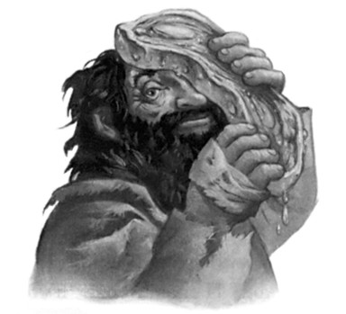

Fred and George had realized what Malfoy was talking about.
Halfway through shaking Harry’s hand they stiffened, looking around at Malfoy.
“Leave it,” said Angelina at once, taking Fred by the arm. “Leave it, Fred, let him yell, he’s just sore he lost, the jumped-up little —”
“— but you like the Weasleys, don’t you, Potter?” said Malfoy, sneering. “Spend holidays there and everything, don’t you? Can’t see how you stand the stink, but I suppose when you’ve been dragged up by Muggles even the Weasleys’ hovel smells okay —”
Harry grabbed hold of George; meanwhile it was taking the combined efforts of Angelina, Alicia, and Katie to stop Fred leaping on
412
THE LION AND
THE SERPENT
Malfoy, who was laughing openly. Harry looked around for Madam Hooch, but she was still berating Crabbe for his illegal Bludger attack.
“Or perhaps,” said Malfoy, leering as he backed away, “you can remember what your mother’s house stank like, Potter, and Weasley’s pigsty reminds you of it —”
Harry was not aware of releasing George, all he knew was that a second later both of them were sprinting at Malfoy. He had completely forgotten the fact that all the teachers were watching: All he wanted to do was cause Malfoy as much pain as possible. With no time to draw out his wand, he merely drew back the fist clutching the Snitch and sank it as hard as he could into Malfoy’s stomach —
“Harry! HARRY! GEORGE! NO !”
He could hear girls’ voices screaming, Malfoy yelling, George swearing, a whistle blowing, and the bellowing of the crowd around him, but he did not care, not until somebody in the vicinity yelled
“IMPEDIMENTA!” and only when he was knocked over backward by the force of the spell did he abandon the attempt to punch every inch of Malfoy he could reach. . . .
“What do you think you’re doing?” screamed Madam Hooch, as Harry leapt to his feet again; it was she who had hit him with the Impediment Jinx. She was holding her whistle in one hand and a wand in the other, her broom lay abandoned several feet away. Malfoy was curled up on the ground, whimpering and moaning, his nose bloody; George was sporting a swollen lip; Fred was still being forcibly restrained by the three Chasers, and Crabbe was cackling in the background. “I’ve never seen behavior like it — back up to the castle, both of you, and straight to your Head of House’s office! Go! Now!”
Harry and George marched off the pitch, both panting, neither saying a word to each other. The howling and jeering of the crowd grew fainter and fainter until they reached the entrance hall, where they could hear nothing except the sound of their own footsteps. Harry became aware that something was still struggling in his right hand, the
413
CHAPTER NINETEEN
knuckles of which he had bruised against Malfoy’s jaw; looking down he saw the Snitch’s silver wings protruding from between his fingers, struggling for release.
They had barely reached the door of Professor McGonagall’s office when she came marching along the corridor behind them. She was wearing a Gryffindor scarf, but tore it from her throat with shaking hands as she strode toward them, looking livid.
“In!” she said furiously, pointing to the door. Harry and George entered. She strode around behind her desk and faced them, quivering with rage as she threw the Gryffindor scarf aside onto the floor.
“Well ?” she said. “I have never seen such a disgraceful exhibition.
Two onto one! Explain yourselves!”
“Malfoy provoked us,” said Harry stiffly.
“Provoked you?” shouted Professor McGonagal , slamming a fist onto her desk so that her tartan biscuit tin slid sideways off it and burst open, littering the floor with Ginger Newts. “He’d just lost, hadn’t he, of course he wanted to provoke you! But what on earth he can have said that justified what you two —”
“He insulted my parents,” snarled George. “And Harry’s mother.”
“But instead of leaving it to Madam Hooch to sort out, you two decided to give an exhibition of Muggle dueling, did you?” bellowed Professor McGonagall. “Have you any idea what you’ve — ?”
“Hem, hem. ”
George and Harry both spun around. Dolores Umbridge was standing in the doorway wrapped in a green tweed cloak that greatly enhanced her resemblance to a giant toad, and smiling in the horribly sickly, ominous way that Harry had come to associate with imminent misery.
“May I help, Professor McGonagall?” asked Professor Umbridge in her most poisonously sweet voice.
Blood rushed into Professor McGonagall’s face.
414
THE LION AND
THE SERPENT
“Help?” she repeated in a constricted voice. “What do you mean,
‘help’?”
Professor Umbridge moved forward into the office, still smiling her sickly smile.
“Why, I thought you might be grateful for a little extra authority.”
Harry would not have been surprised to see sparks fly from Professor McGonagall’s nostrils.
“You thought wrong,” she said, turning her back on Umbridge.
“Now, you two had better listen closely. I do not care what provocation Malfoy offered you, I do not care if he insulted every family member you possess, your behavior was disgusting and I am giving each of you a week’s worth of detention! Do not look at me like that, Potter, you deserve it! And if either of you ever —”
“Hem, hem. ”
Professor McGonagall closed her eyes as though praying for patience as she turned her face toward Professor Umbridge again.
“Yes?”
“I think they deserve rather more than detentions,” said Umbridge, smiling still more broadly.
Professor McGonagall’s eyes flew open. “But unfortunately,” she said, with an attempt at a reciprocal smile that made her look as though she had lockjaw, “it is what I think that counts, as they are in my House, Dolores.”
“Well, actually, Minerva,” simpered Umbridge, “I think you’ll find that what I think does count. Now, where is it? Cornelius just sent it.
. . . I mean,” she gave a little false laugh as she rummaged in her handbag, “the Minister just sent it. . . . Ah yes . . .”
She had pulled out a piece of parchment that she now unfurled, clearing her throat fussily before starting to read what it said.
“Hem, hem . . . ‘Educational Decree Number Twenty-five . . .’ ”
“Not another one!” exclaimed Professor McGonagall violently.
415
CHAPTER NINETEEN
“Well, yes,” said Umbridge, still smiling. “As a matter of fact, Minerva, it was you who made me see that we needed a further amendment. . . . You remember how you overrode me, when I was unwilling to allow the Gryffindor Quidditch team to re-form? How you took the case to Dumbledore, who insisted that the team be allowed to play? Well, now, I couldn’t have that. I contacted the Minister at once, and he quite agreed with me that the High Inquisitor has to have the power to strip pupils of privileges, or she — that is to say, I — would have less authority than common teachers! And you see now, don’t you, Minerva, how right I was in attempting to stop the Gryffindor team re-forming? Dreadful tempers . . . Anyway, I was reading out our amendment . . . hem, hem . . . ‘The High Inquisitor will henceforth have supreme authority over all punishments, sanctions, and removal of privileges pertaining to the students of Hogwarts, and the power to alter such punishments, sanctions, and removals of privileges as may have been ordered by other staff members. Signed, Cornelius Fudge, Minister of Magic, Order of Merlin First Class, etc., etc. . . .’ ”
She rolled up the parchment and put it back into her handbag, still smiling.
“So . . . I really think I will have to ban these two from playing Quidditch ever again,” she said, looking from Harry to George and back again.
Harry felt the Snitch fluttering madly in his hand.
“Ban us?” he said, and his voice sounded strangely distant. “From playing . . . ever again?”
“Yes, Mr. Potter, I think a lifelong ban ought to do the trick,” said Umbridge, her smile widening still further as she watched him struggle to comprehend what she had said. “You and Mr. Weasley here.
And I think, to be safe, this young man’s twin ought to be stopped too — if his teammates had not restrained him, I feel sure he would have attacked young Mr. Malfoy as well. I will want their broomsticks confiscated, of course; I shall keep them safely in my office, to make
416
THE LION AND
THE SERPENT
sure there is no infringement of my ban. But I am not unreasonable, Professor McGonagall,” she continued, turning back to Professor McGonagall who was now standing as still as though carved from ice, staring at her. “The rest of the team can continue playing, I saw no signs of violence from any of them. Well . . . good afternoon to you.”
And with a look of the utmost satisfaction Umbridge left the room, leaving a horrified silence in her wake.
“Banned,” said Angelina in a hollow voice, late that evening in the common room. “Banned. No Seeker and no Beaters . . . What on earth are we going to do?”
It did not feel as though they had won the match at all. Everywhere Harry looked there were disconsolate and angry faces; the team themselves were slumped around the fire, all apart from Ron, who had not been seen since the end of the match.
“It’s just so unfair,” said Alicia numbly. “I mean, what about Crabbe and that Bludger he hit after the whistle had been blown? Has she banned him?”
“No,” said Ginny miserably; she and Hermione were sitting on either side of Harry. “He just got lines, I heard Montague laughing about it at dinner.”
“And banning Fred when he didn’t even do anything!” said Alicia furiously, pummeling her knee with her fist.
“It’s not my fault I didn’t,” said Fred, with a very ugly look on his face. “I would’ve pounded the little scumbag to a pulp if you three hadn’t been holding me back.”
Harry stared miserably at the dark window. Snow was falling. The Snitch he had caught earlier was now zooming around and around the common room; people were watching its progress as though hyp-notized and Crookshanks was leaping from chair to chair, trying to catch it.
“I’m going to bed,” said Angelina, getting slowly to her feet.
417
CHAPTER NINETEEN
“Maybe this will all turn out to have been a bad dream. . . . Maybe I’l wake up tomorrow and find we haven’t played yet. . . .”
She was soon followed by Alicia and Katie. Fred and George sloped off to bed some time later, glowering at everyone they passed, and Ginny went not long after that. Only Harry and Hermione were left beside the fire.
“Have you seen Ron?” Hermione asked in a low voice.
Harry shook his head.
“I think he’s avoiding us,” said Hermione. “Where do you think he — ?”
But at that precise moment, there was a creaking sound behind them as the Fat Lady swung forward and Ron came clambering through the portrait hole. He was very pale indeed and there was snow in his hair. When he saw Harry and Hermione he stopped dead in his tracks.
“Where have you been?” said Hermione anxiously, springing up.
“Walking,” Ron mumbled. He was still wearing his Quidditch things.
“You look frozen,” said Hermione. “Come and sit down!”
Ron walked to the fireside and sank into the chair farthest from Harry’s, not looking at him. The stolen Snitch zoomed over their heads.
“I’m sorry,” Ron mumbled, looking at his feet.
“What for?” said Harry.
“For thinking I can play Quidditch,” said Ron. “I’m going to resign first thing tomorrow.”
“If you resign,” said Harry testily, “there’ll only be three players left on the team.” And when Ron looked puzzled, he said, “I’ve been given a lifetime ban. So’ve Fred and George.”
“What?” Ron yelped.
Hermione told him the full story; Harry could not bear to tell it again. When she had finished, Ron looked more anguished than ever.
418
THE LION AND
THE SERPENT
“This is all my fault —”
“You didn’t make me punch Malfoy,” said Harry angrily.
“— if I wasn’t so lousy at Quidditch —”
“— it’s got nothing to do with that —”
“— it was that song that wound me up —”
“— it would’ve wound anyone up —”
Hermione got up and walked to the window, away from the argument, watching the snow swirling down against the pane.
“Look, drop it, will you!” Harry burst out. “It’s bad enough without you blaming yourself for everything!”
Ron said nothing but sat gazing miserably at the damp hem of his robes. After a while he said in a dull voice, “This is the worst I’ve ever felt in my life.”
“Join the club,” said Harry bitterly.
“Well,” said Hermione, her voice trembling slightly. “I can think of one thing that might cheer you both up.”
“Oh yeah?” said Harry skeptically.
“Yeah,” said Hermione, turning away from the pitch-black, snow-flecked window, a broad smile spreading across her face. “Hagrid’s back.”
419

C H A P T E R T W E N T Y
HAGRID’S TALE
arry sprinted up to the boys’ dormitory to fetch the Invisi-H bility Cloak and the Marauder’s Map from his trunk; he was so quick that he and Ron were ready to leave at least five minutes before Hermione hurried back down from the girls’ dormitories, wearing scarf, gloves, and one of her own knobbly elf hats.
“Well, it’s cold out there!” she said defensively, as Ron clicked his tongue impatiently.
They crept through the portrait hole and covered themselves hastily in the cloak — Ron had grown so much he now needed to crouch to prevent his feet showing — then, moving slowly and cautiously, they proceeded down the many staircases, pausing at intervals to check the map for signs of Filch or Mrs. Norris. They were lucky; they saw nobody but Nearly Headless Nick, who was gliding along absentmindedly humming something that sounded horribly like
“Weasley Is Our King.” They crept across the entrance hall and then out into the silent, snowy grounds. With a great leap of his heart, Harry saw little golden squares of light ahead and smoke coiling up from Hagrid’s chimney. He set off at a quick march, the other two
420
HAGRID’S TALE
jostling and bumping along behind him, and they crunched excitedly through the thickening snow until at last they reached the wooden front door; when Harry raised his fist and knocked three times, a dog started barking frantically inside.
“Hagrid, it’s us!” Harry called through the keyhole.
“Shoulda known!” said a gruff voice.
They beamed at one another under the cloak; they could tell that Hagrid’s voice was pleased. “Bin home three seconds . . . Out the way, Fang . . . Out the way, yeh dozy dog . . .”
The bolt was drawn back, the door creaked open, and Hagrid’s head appeared in the gap.
Hermione screamed.
“Merlin’s beard, keep it down!” said Hagrid hastily, staring wildly over their heads. “Under that cloak, are yeh? Well, get in, get in!”
“I’m sorry!” Hermione gasped, as the three of them squeezed past Hagrid into the house and pulled the cloak off themselves so he could see them. “I just — oh, Hagrid !”
“It’s nuthin’, it’s nuthin’!” said Hagrid hastily, shutting the door behind them and hurrying to close all the curtains, but Hermione continued to gaze up at him in horror.
Hagrid’s hair was matted with congealed blood, and his left eye had been reduced to a puffy slit amid a mass of purple-and-black bruises.
There were many cuts on his face and hands, some of them still bleeding, and he was moving gingerly, which made Harry suspect broken ribs. It was obvious that he had only just got home; a thick black traveling cloak lay over the back of a chair and a haversack large enough to carry several small children leaned against the wall inside the door.
Hagrid himself, twice the size of a normal man and three times as broad, was now limping over to the fire and placing a copper kettle over it.
“What happened to you?” Harry demanded, while Fang danced around them all, trying to lick their faces.
421
CHAPTER TWENTY
“Told yeh, nuthin’,” said Hagrid firmly. “Want a cuppa?”
“Come off it,” said Ron, “you’re in a right state!”
“I’m tellin’ yeh, I’m fine,” said Hagrid, straightening up and turning to beam at them all, but wincing. “Blimey, it’s good ter see you three again — had good summers, did yeh?”
“Hagrid, you’ve been attacked!” said Ron.
“Fer the las’ time, it’s nuthin’!” said Hagrid firmly.
“Would you say it was nothing if one of us turned up with a pound of mince instead of a face?” Ron demanded.
“You ought to go and see Madam Pomfrey, Hagrid,” said Hermione anxiously. “Some of those cuts look nasty.”
“I’m dealin’ with it, al righ’?” said Hagrid repressively.
He walked across to the enormous wooden table that stood in the middle of his cabin and twitched aside a tea towel that had been lying on it. Underneath was a raw, bloody, green-tinged steak slightly larger than the average car tire.
“You’re not going to eat that, are you, Hagrid?” said Ron, leaning in for a closer look. “It looks poisonous.”
“It’s s’posed ter look like that, it’s dragon meat,” Hagrid said. “An’ I didn’ get it ter eat.”
He picked up the steak and slapped it over the left side of his face.
Greenish blood trickled down into his beard as he gave a soft moan of satisfaction.
“Tha’s better. It helps with the stingin’, yeh know.”
“So are you going to tell us what’s happened to you?” Harry asked.
“Can’, Harry. Top secret. More’n me job’s worth ter tell yeh that.”
“Did the giants beat you up, Hagrid?” asked Hermione quietly.
Hagrid’s fingers slipped on the dragon steak, and it slid squelchily onto his chest.
“Giants?” said Hagrid, catching the steak before it reached his belt and slapping it back over his face. “Who said anythin’ abou’ giants?
422
HAGRID’S TALE
Who yeh bin talkin’ to? Who’s told yeh what I’ve — who’s said I’ve bin — eh?”
“We guessed,” said Hermione apologetically.
“Oh, yeh did, did yeh?” said Hagrid, fixing her sternly with the eye that was not hidden by the steak.
“It was kind of . . . obvious,” said Ron. Harry nodded.
Hagrid glared at them, then snorted, threw the steak onto the table again and strode back to the kettle, which was now whistling.
“Never known kids like you three fer knowin’ more’n yeh oughta,”
he muttered, splashing boiling water into three of his bucket-shaped mugs. “An’ I’m not complimentin’ yeh, neither. Nosy, some’d call it.
Interferin’.”
But his beard twitched.
“So you have been to look for giants?” said Harry, grinning as he sat down at the table.
Hagrid set tea in front of each of them, sat down, picked up his steak again, and slapped it back over his face.
“Yeah, all righ’,” he grunted, “I have.”
“And you found them?” said Hermione in a hushed voice.
“Well, they’re not that difficult ter find, ter be honest,” said Hagrid.
“Pretty big, see.”
“Where are they?” said Ron.
“Mountains,” said Hagrid unhelpfully.
“So why don’t Muggles — ?”
“They do,” said Hagrid darkly. “O’ny their deaths are always put down ter mountaineerin’ accidents, aren’ they?”
He adjusted the steak a little so that it covered the worst of the bruising.
“Come on, Hagrid, tell us what you’ve been up to!” said Ron. “Tell us about being attacked by the giants and Harry can tell you about being attacked by the dementors —”
423
CHAPTER TWENTY
Hagrid choked in his mug and dropped his steak at the same time; a large quantity of spit, tea, and dragon blood was sprayed over the table as Hagrid coughed and spluttered and the steak slid, with a soft splat, onto the floor.
“Whadda yeh mean, attacked by dementors?” growled Hagrid.
“Didn’t you know?” Hermione asked him, wide-eyed.
“I don’ know anything that’s been happenin’ since I left. I was on a secret mission, wasn’ I, didn’ wan’ owls followin’ me all over the place — ruddy dementors! Yeh’re not serious?”
“Yeah, I am, they turned up in Little Whinging and attacked my cousin and me, and then the Ministry of Magic expelled me —”
“WHAT?”
“— and I had to go to a hearing and everything, but tell us about the giants first.”
“You were expelled?”
“Tell us about your summer and I’ll tell you about mine.”
Hagrid glared at him through his one open eye. Harry looked right back, an expression of innocent determination on his face.
“Oh, all righ’,” Hagrid said in a resigned voice.
He bent down and tugged the dragon steak out of Fang’s mouth.
“Oh, Hagrid, don’t, it’s not hygien —” Hermione began, but Hagrid had already slapped the meat back over his swollen eye. He took another fortifying gulp of tea and then said, “Well, we set off righ’ after term ended —”
“Madame Maxime went with you, then?” Hermione interjected.
“Yeah, tha’s right,” said Hagrid, and a softened expression appeared on the few inches of face that were not obscured by beard or green steak. “Yeah, it was jus’ the pair of us. An’ I’ll tell yeh this, she’s not afraid of roughin’ it, Olympe. Yeh know, she’s a fine, well-dressed woman, an’ knowin’ where we was goin’ I wondered ’ow she’d feel abou’ clamberin’ over boulders an’ sleepin’ in caves an’ tha’, bu’ she never complained once.”
424
HAGRID’S TALE
“You knew where you were going?” Harry asked. “You knew where the giants were?”
“Well, Dumbledore knew, an’ he told us,” said Hagrid.
“Are they hidden?” asked Ron. “Is it a secret, where they are?”
“Not really,” said Hagrid, shaking his shaggy head. “It’s jus’ that mos’ wizards aren’ bothered where they are, s’ long as it’s a good long way away. But where they are’s very difficult ter get ter, fer humans anyway, so we needed Dumbledore’s instructions. Took us abou’ a month ter get there —”
“A month?” said Ron, as though he had never heard of a journey lasting such a ridiculously long time. “But — why couldn’t you just grab a Portkey or something?”
There was an odd expression in Hagrid’s unobscured eye as he squinted at Ron; it was almost pitying.
“We’re bein’ watched, Ron,” he said gruffly.
“What d’you mean?”
“Yeh don’ understand,” said Hagrid. “The Ministry’s keepin’ an eye on Dumbledore an’ anyone they reckon’s in league with him, an’ —”
“We know about that,” said Harry quickly, keen to hear the rest of Hagrid’s story. “We know about the Ministry watching Dumbledore —”
“So you couldn’t use magic to get there?” asked Ron, looking thunderstruck. “You had to act like Muggles all the way?”
“Well, not exactly all the way,” said Hagrid cagily. “We jus’ had ter be careful, ’cause Olympe an’ me, we stick out a bit —”
Ron made a stifled noise somewhere between a snort and a sniff and hastily took a gulp of tea.
“— so we’re not hard ter follow. We was pretendin’ we was goin’ on holiday together, so we got inter France an’ we made like we was headin’ fer where Olympe’s school is, ’cause we knew we was bein’
tailed by someone from the Ministry. We had to go slow, ’cause I’m not really s’posed ter use magic an’ we knew the Ministry’d be lookin’
425
CHAPTER TWENTY
fer a reason ter run us in. But we managed ter give the berk tailin’ us the slip round abou’ Dee-John —”
“Ooooh, Dijon?” said Hermione excitedly. “I’ve been there on holiday, did you see — ?”
She fell silent at the look on Ron’s face.
“We chanced a bit o’ magic after that, and it wasn’ a bad journey.
Ran inter a couple o’ mad trolls on the Polish border, an’ I had a sligh’
disagreement with a vampire in a pub in Minsk, but apart from tha’, couldn’t’a bin smoother.
“An’ then we reached the place, an’ we started trekkin’ up through the mountains, lookin’ fer signs of ’em . . .
“We had ter lay off the magic once we got near ’em. Partly ’cause they don’ like wizards an’ we didn’ want ter put their backs up too soon, and partly ’cause Dumbledore had warned us You-Know-Who was bound ter be after the giants an’ all. Said it was odds on he’d sent a messenger off ter them already. Told us ter be very careful of drawin’ attention ter ourselves as we got nearer in case there was Death Eaters around.”
Hagrid paused for a long draft of tea.
“Go on!” said Harry urgently.
“Found ’em,” said Hagrid baldly. “Went over a ridge one nigh’ an’
there they was, spread ou’ underneath us. Little fires burnin’ below an’
huge shadows . . . It was like watchin’ bits o’ the mountain movin’.”
“How big are they?” asked Ron in a hushed voice.
“ ’Bout twenty feet,” said Hagrid casually. “Some o’ the bigger ones mighta bin twenty-five.”
“And how many were there?” asked Harry.
“I reckon abou’ seventy or eighty,” said Hagrid.
“Is that all?” said Hermione.
“Yep,” said Hagrid sadly, “eighty left, an’ there was loads once, musta bin a hundred diff’rent tribes from all over the world. But they’ve bin dyin’ out fer ages. Wizards killed a few, o’ course, but
426
HAGRID’S TALE
mostly they killed each other, an’ now they’re dyin’ out faster than ever. They’re not made ter live bunched up together like tha’. Dumbledore says it’s our fault, it was the wizards who forced ’em to go an’
made ’em live a good long way from us an’ they had no choice but ter stick together fer their own protection.”
“So,” said Harry, “you saw them and then what?”
“Well, we waited till morning, didn’ want ter go sneakin’ up on ’em in the dark, fer our own safety,” said Hagrid. “ ’Bout three in the mornin’ they fell asleep jus’ where they was sittin’. We didn’ dare sleep.
Fer one thing, we wanted ter make sure none of ’em woke up an’
came up where we were, an’ fer another, the snorin’ was unbelievable.
Caused an avalanche near mornin’.
“Anyway, once it was light we wen’ down ter see ’em.”
“Just like that?” said Ron, looking awestruck. “You just walked right into a giant camp?”
“Well, Dumbledore’d told us how ter do it,” said Hagrid. “Give the Gurg gifts, show some respect, yeh know.”
“Give the what gifts?” asked Harry.
“Oh, the Gurg — means the chief.”
“How could you tell which one was the Gurg?” asked Ron.
Hagrid grunted in amusement.
“No problem,” he said. “He was the biggest, the ugliest, an’ the laziest. Sittin’ there waitin’ ter be brought food by the others. Dead goats an’ such like. Name o’ Karkus. I’d put him at twenty-two, twenty-three feet, an’ the weight of a couple o’ bull elephants. Skin like rhino hide an’ all.”
“And you just walked up to him?” said Hermione breathlessly.
“Well . . . down ter him, where he was lyin’ in the valley. They was in this dip between four pretty high mountains, see, beside a mountain lake, an’ Karkus was lyin’ by the lake roarin’ at the others ter feed him an’ his wife. Olympe an’ I went down the mountainside —”
427
CHAPTER TWENTY
“But didn’t they try and kill you when they saw you?” asked Ron incredulously.
“It was def’nitely on some of their minds,” said Hagrid, shrugging,
“but we did what Dumbledore told us ter do, which was ter hold our gift up high an’ keep our eyes on the Gurg an’ ignore the others. So tha’s what we did. An’ the rest of ’em went quiet an’ watched us pass an’ we got right up ter Karkus’s feet an’ we bowed an’ put our present down in front o’ him.”
“What do you give a giant?” asked Ron eagerly. “Food?”
“Nah, he can get food all righ’ fer himself,” said Hagrid. “We took him magic. Giants like magic, jus’ don’t like us usin’ it against ’em.
Anyway, that firs’ day we gave him a branch o’ Gubraithian fire.”
Hermione said “wow” softly, but Harry and Ron both frowned in puzzlement.
“A branch of — ?”
“Everlasting fire,” said Hermione irritably, “you ought to know that by now, Professor Flitwick’s mentioned it at least twice in class!”
“Well anyway,” said Hagrid quickly, intervening before Ron could answer back, “Dumbledore’d bewitched this branch to burn evermore, which isn’ somethin’ any wizard could do, an’ so I lies it down in the snow by Karkus’s feet and says, ‘A gift to the Gurg of the giants from Albus Dumbledore, who sends his respectful greetings.’ ”
“And what did Karkus say?” asked Harry eagerly.
“Nothin’,” said Hagrid. “Didn’ speak English.”
“You’re kidding!”
“Didn’ matter,” said Hagrid imperturbably, “Dumbledore had warned us tha’ migh’ happen. Karkus knew enough to yell fer a couple o’ giants who knew our lingo an’ they translated fer us.”
“And did he like the present?” asked Ron.
“Oh yeah, it went down a storm once they understood what it was,” said Hagrid, turning his dragon steak over to press the cooler
428
HAGRID’S TALE
side to his swollen eye. “Very pleased. So then I said, ‘Albus Dumbledore asks the Gurg to speak with his messenger when he returns tomorrow with another gift.’ ”
“Why couldn’t you speak to them that day?” asked Hermione.
“Dumbledore wanted us ter take it very slow,” said Hagrid. “Let
’em see we kept our promises. We’ll come back tomorrow with another present, an’ then we do come back with another present — gives a good impression, see? An’ gives them time ter test out the firs’ present an’ find out it’s a good one, an’ get ’em eager fer more. In any case, giants like Karkus — overload ’em with information an’ they’ll kill yeh jus’ to simplify things. So we bowed outta the way an’ went off an’
found ourselves a nice little cave ter spend that night in, an’ the followin’ mornin’ we went back an’ this time we found Karkus sittin’ up waitin’ fer us lookin’ all eager.”
“And you talked to him?”
“Oh yeah. Firs’ we presented him with a nice battle helmet —
goblin-made an’ indestructible, yeh know — an’ then we sat down an’
we talked.”
“What did he say?”
“Not much,” said Hagrid. “Listened mostly. But there were good signs. He’d heard o’ Dumbledore, heard he’d argued against the killin’
of the last giants in Britain. Karkus seemed ter be quite int’rested in what Dumbledore had ter say. An’ a few o’ the others, ’specially the ones who had some English, they gathered round an’ listened too. We were hopeful when we left that day. Promised ter come back next day with another present.
“But that night it all wen’ wrong.”
“What d’you mean?” said Ron quickly.
“Well, like I say, they’re not meant ter live together, giants,” said Hagrid sadly. “Not in big groups like that. They can’ help themselves, they half kill each other every few weeks. The men fight each other an’
429
CHAPTER TWENTY
the women fight each other, the remnants of the old tribes fight each other, an’ that’s even without squabbles over food an’ the best fires an’
sleepin’ spots. Yeh’d think, seein’ as how their whole race is abou’ finished, they’d lay off each other, but . . .”
Hagrid sighed deeply
“That night a fight broke out, we saw it from the mouth of our cave, lookin’ down on the valley. Went on fer hours, yeh wouldn’ believe the noise. An’ when the sun came up the snow was scarlet an’ his head was lyin’ at the bottom o’ the lake.”
“Whose head?” gasped Hermione.
“Karkus’s,” said Hagrid heavily. “There was a new Gurg, Golgomath.” He sighed deeply. “Well, we hadn’ bargained on a new Gurg two days after we’d made friendly contact with the firs’ one, an’ we had a funny feelin’ Golgomath wouldn’ be so keen ter listen to us, but we had ter try.”
“You went to speak to him?” asked Ron incredulously. “After you’d watched him rip off another giant’s head?”
“ ’Course we did,” said Hagrid, “we hadn’ gone all that way ter give up after two days! We wen’ down with the next present we’d meant ter give ter Karkus.
“I knew it was no go before I’d opened me mouth. He was sitting there wearin’ Karkus’s helmet, leerin’ at us as we got nearer. He’s massive, one o’ the biggest ones there. Black hair an’ matchin’ teeth an’ a necklace o’ bones. Human-lookin’ bones, some of ’em. Well, I gave it a go — held out a great roll o’ dragon skin — an’ said A gift fer the Gurg of the giants —’ Nex’ thing I knew, I was hangin’ upside down in the air by me feet, two of his mates had grabbed me.”
Hermione clapped her hands to her mouth.
“How did you get out of that?” asked Harry.
“Wouldn’ta done if Olympe hadn’ bin there,” said Hagrid. “She pul ed out her wand an’ did some o’ the fastes’ spellwork I’ve ever seen.
430
HAGRID’S TALE
Ruddy marvelous. Hit the two holdin’ me right in the eyes with Con-junctivitus Curses an’ they dropped me straightaway — bu’ we were in trouble then, ’cause we’d used magic against ’em, an’ that’s what giants hate abou’ wizards. We had ter leg it an’ we knew there was no way we was going ter be able ter march inter camp again.”
“Blimey, Hagrid,” said Ron quietly.
“So how come it’s taken you so long to get home if you were only there for three days?” asked Hermione.
“We didn’ leave after three days!” said Hagrid, looking outraged.
“Dumbledore was relyin’ on us!”
“But you’ve just said there was no way you could go back!”
“Not by daylight, we couldn’, no. We just had ter rethink a bit.
Spent a couple o’ days lyin’ low up in the cave an’ watchin’. An’ wha’
we saw wasn’ good.”
“Did he rip off more heads?” asked Hermione, sounding squeamish.
“No,” said Hagrid. “I wish he had.”
“What d’you mean?”
“I mean we soon found out he didn’ object ter all wizards — just us.”
“Death Eaters?” said Harry quickly.
“Yep,” said Hagrid darkly. “Couple of ’em were visitin’ him ev’ry day, bringin’ gifts ter the Gurg, an’ he wasn’ dangling them upside down.”
“How d’you know they were Death Eaters?” said Ron.
“Because I recognized one of ’em,” Hagrid growled. “Macnair, remember him? Bloke they sent ter kill Buckbeak? Maniac, he is. Likes killin’ as much as Golgomath, no wonder they were gettin’ on so wel .”
“So Macnair’s persuaded the giants to join You-Know-Who?” said Hermione desperately.
“Hold yer hippogriffs, I haven’ finished me story yet!” said Hagrid indignantly, who, considering he had not wanted to tell them anything in the first place, now seemed to be rather enjoying himself. “Me
431
CHAPTER TWENTY
an’ Olympe talked it over an’ we agreed, jus’ ’cause the Gurg looked like favorin’ You-Know-Who didn’ mean all of ’em would. We had ter try an’ persuade some o’ the others, the ones who hadn’ wanted Golgomath as Gurg.”
“How could you tell which ones they were?” asked Ron.
“Well, they were the ones bein’ beaten to a pulp, weren’ they?” said Hagrid patiently. “The ones with any sense were keepin’ outta Golgomath’s way, hidin’ out in caves roun’ the gully jus’ like we were. So we decided we’d go pokin’ round the caves by night an’ see if we couldn’
persuade a few o’ them.”
“You went poking around dark caves looking for giants?” said Ron with awed respect in his voice.
“Well, it wasn’ the giants who worried us most,” said Hagrid. “We were more concerned abou’ the Death Eaters. Dumbledore had told us before we wen’ not ter tangle with ’em if we could avoid it, an’ the trouble was they knew we was around — ’spect Golgomath told him abou’
us. At night when the giants were sleepin’ an’ we wanted ter be creepin’
inter the caves, Macnair an’ the other one were sneakin’ round the mountains lookin’ fer us. I was hard put to stop Olympe jumpin’ out at them,” said Hagrid, the corners of his mouth lifting his wild beard.
“She was rarin’ ter attack ’em. . . . she’s somethin’ when she’s roused, Olympe. . . . Fiery, yeh know . . . ’spect it’s the French in her . . .”
Hagrid gazed misty-eyed into the fire. Harry allowed him thirty seconds’ reminiscence before clearing his throat loudly.
“So what happened? Did you ever get near any of the other giants?”
“What? Oh . . . oh yeah, we did. Yeah, on the third night after Karkus was killed, we crept outta the cave we’d bin hidin’ in and headed back down inter the gully, keepin’ our eyes skinned fer the Death Eaters. Got inside a few o’ the caves, no go — then, in abou’
the sixth one, we found three giants hidin’.”
“Cave must’ve been cramped,” said Ron.
432
HAGRID’S TALE
“Wasn’ room ter swing a kneazle,” said Hagrid.
“Didn’t they attack you when they saw you?” asked Hermione.
“Probably woulda done if they’d bin in any condition,” said Hagrid, “but they was badly hurt, all three o’ them. Golgomath’s lot had beaten ’em unconscious; they’d woken up an’ crawled inter the nearest shelter they could find. Anyway, one o’ them had a bit of English an’ ’e translated fer the others, an’ what we had ter say didn’ seem ter go down too badly. So we kep’ goin’ back, visitin’ the wounded. . . . I reckon we had abou’ six or seven o’ them convinced at one poin’.”
“Six or seven?” said Ron eagerly. “Well that’s not bad — are they going to come over here and start fighting You-Know-Who with us?”
But Hermione said, “What do you mean ‘at one point,’ Hagrid?”
Hagrid looked at her sadly.
“Golgomath’s lot raided the caves. The ones tha’ survived didn’
wan’ no more ter to do with us after that.”
“So . . . so there aren’t any giants coming?” said Ron, looking disappointed.
“Nope,” said Hagrid, heaving a deep sigh as he turned over his steak again and applied the cooler side to his face, “but we did wha’ we meant ter do, we gave ’em Dumbledore’s message an’ some o’ them heard it an’ I ’spect some o’ them’ll remember it. Jus’ maybe, them that don’ want ter stay around Golgomath’ll move outta the mountains, an’ there’s gotta be a chance they’ll remember Dumbledore’s friendly to ’em. . . . Could be they’ll come . . .”
Snow was filling up the window now. Harry became aware that the knees of his robes were soaked through; Fang was drooling with his head in Harry’s lap.
“Hagrid?” said Hermione quietly after a while.
“Mmm?”
“Did you . . . was there any sign of . . . did you hear anything about your . . . your . . . mother while you were there?”
433
CHAPTER TWENTY
Hagrid’s unobscured eye rested upon her, and Hermione looked rather scared.
“I’m sorry . . . I . . . forget it —”
“Dead,” Hagrid grunted. “Died years ago. They told me.”
“Oh . . . I’m . . . I’m really sorry,” said Hermione in a very small voice.
Hagrid shrugged his massive shoulders. “No need,” he said shortly.
“Can’ remember her much. Wasn’ a great mother.”
They were silent again. Hermione glanced nervously at Harry and Ron, plainly wanting them to speak.
“But you still haven’t explained how you got in this state, Hagrid,”
Ron said, gesturing toward Hagrid’s bloodstained face.
“Or why you’re back so late,” said Harry. “Sirius says Madame Maxime got back ages ago —”
“Who attacked you?” said Ron.
“I haven’ bin attacked!” said Hagrid emphatically. “I —”
But the rest of his words were drowned in a sudden outbreak of rapping on the door. Hermione gasped; her mug slipped through her fingers and smashed on the floor; Fang yelped. All four of them stared at the window beside the doorway. The shadow of somebody small and squat rippled across the thin curtain.
“It’s her!” Ron whispered.
“Get under here!” Harry said quickly; seizing the Invisibility Cloak he whirled it over himself and Hermione while Ron tore around the table and dived beneath the cloak as well. Huddled together they backed away into a corner. Fang was barking madly at the door. Hagrid looked thoroughly confused.
“Hagrid, hide our mugs!”
Hagrid seized Harry’s and Ron’s mugs and shoved them under the cushion in Fang’s basket. Fang was now leaping up at the door; Hagrid pushed him out of the way with his foot and pulled it open.
Professor Umbridge was standing in the doorway wearing her
434
HAGRID’S TALE
green tweed cloak and a matching hat with earflaps. Lips pursed, she leaned back so as to see Hagrid’s face; she barely reached his navel.
“So, ” she said slowly and loudly, as though speaking to somebody deaf. “You’re Hagrid, are you?”
Without waiting for an answer she strolled into the room, her bulging eyes rolling in every direction.
“Get away,” she snapped, waving her handbag at Fang, who had bounded up to her and was attempting to lick her face.
“Er — I don’ want ter be rude,” said Hagrid, staring at her, “but who the ruddy hell are you?”
“My name is Dolores Umbridge.”
Her eyes were sweeping the cabin. Twice they stared directly into the corner where Harry stood, sandwiched between Ron and Hermione.
“Dolores Umbridge?” Hagrid said, sounding thoroughly confused.
“I thought you were one o’ them Ministry — don’ you work with Fudge?”
“I was Senior Undersecretary to the Minister, yes,” said Umbridge, now pacing around the cabin, taking in every tiny detail within, from the haversack against the wall to the abandoned traveling cloak. “I am now the Defense Against the Dark Arts teacher —”
“Tha’s brave of yeh,” said Hagrid, “there’s not many’d take tha’ job anymore —”
“— and Hogwarts High Inquisitor,” said Umbridge, giving no sign that she had heard him.
“Wha’s that?” said Hagrid, frowning.
“Precisely what I was going to ask,” said Umbridge, pointing at the broken shards of china on the floor that had been Hermione’s mug.
“Oh,” said Hagrid, with a most unhelpful glance toward the corner where Harry, Ron, and Hermione stood hidden, “oh, tha’ was . . . was Fang. He broke a mug. So I had ter use this one instead.”
Hagrid pointed to the mug from which he had been drinking, one
435
CHAPTER TWENTY
hand still clamped over the dragon steak pressed to his eye. Umbridge stood facing him now, taking in every detail of his appearance instead of the cabin’s.
“I heard voices,” she said quietly.
“I was talkin’ ter Fang,” said Hagrid stoutly.
“And was he talking back to you?”
“Well . . . in a manner o’ speakin’,” said Hagrid, looking uncomfortable. “I sometimes say Fang’s near enough human —”
“There are three sets of footprints in the snow leading from the castle doors to your cabin,” said Umbridge sleekly.
Hermione gasped; Harry clapped a hand over her mouth. Luckily, Fang was sniffing loudly around the hem of Professor Umbridge’s robes, and she did not appear to have heard.
“Wel , I on’y jus’ got back,” said Hagrid, waving an enormous hand at the haversack. “Maybe someone came ter call earlier an’ I missed em. “There are no footsteps leading away from your cabin door.”
“Well I . . . I don’ know why that’d be. . . .” said Hagrid, tugging nervously at his beard and again glancing toward the corner where Harry, Ron, and Hermione stood, as though asking for help.
“Erm . . .”
Umbridge wheeled around and strode the length of the cabin, looking around carefully. She bent and peered under the bed. She opened Hagrid’s cupboards. She passed within two inches of where Harry, Ron, and Hermione stood pressed against the wall; Harry actually pulled in his stomach as she walked by. After looking carefully inside the enormous cauldron Hagrid used for cooking she wheeled around again and said, “What has happened to you? How did you sustain those injuries?”
Hagrid hastily removed the dragon steak from his face, which in Harry’s opinion was a mistake, because the black-and-purple bruising
436
HAGRID’S TALE
all around his eye was now clearly visible, not to mention the large amount of fresh and congealed blood on his face. “Oh, I . . . had a bit of an accident,” he said lamely.
“What sort of accident?”
“I-I tripped.”
“You tripped,” she repeated coolly.
“Yeah, tha’s right. Over . . . over a friends broomstick. I don’ fly, meself. Well, look at the size o’ me, I don’ reckon there’s a broomstick that’d hold me. Friend o’ mine breeds Abraxan horses, I dunno if you’ve ever seen ’em, big beasts, winged, yeh know, I’ve had a bit of a ride on one o’ them an’ it was —”
“Where have you been?” asked Umbridge, cutting coolly through Hagrid’s babbling.
“Where’ve I . . . ?”
“Been, yes,” she said. “Term started more than two months ago.
Another teacher has had to cover your classes. None of your colleagues has been able to give me any information as to your whereabouts. You left no address. Where have you been?”
There was a pause in which Hagrid stared at her with his newly un-covered eye. Harry could almost hear his brain working furiously.
“I — I’ve been away for me health,” he said.
“For your health,” said Umbridge. Her eyes traveled over Hagrid’s discolored and swollen face; dragon blood dripped gently onto his waistcoat in the silence. “I see.”
“Yeah,” said Hagrid, “bit o’ — o’ fresh air, yeh know —”
“Yes, as gamekeeper fresh air must be so difficult to come by,” said Umbridge sweetly. The small patch of Hagrid’s face that was not black or purple flushed.
“Well — change o’ scene, yeh know —”
“Mountain scenery?” said Umbridge swiftly.
She knows, Harry thought desperately.
437
CHAPTER TWENTY
“Mountains?” Hagrid repeated, clearly thinking fast. “Nope, South of France fer me. Bit o’ sun an’ . . . an’ sea.”
“Really?” said Umbridge. “You don’t have much of a tan.”
“Yeah . . . well . . . sensitive skin,” said Hagrid, attempting an in-gratiating smile. Harry noticed that two of his teeth had been knocked out. Umbridge looked at him coldly; his smile faltered. Then she hoisted her handbag a little higher into the crook of her arm and said,
“I shall, of course, be informing the Minister of your late return.”
“Righ’,” said Hagrid, nodding.
“You ought to know too that as High Inquisitor it is my unfortunate but necessary duty to inspect my fellow teachers. So I daresay we shall meet again soon enough.”
She turned sharply and marched back to the door.
“You’re inspectin’ us?” Hagrid echoed blankly, looking after her.
“Oh yes,” said Umbridge softly, looking back at him with her hand on the door handle. “The Ministry is determined to weed out unsatisfactory teachers, Hagrid. Good night.”
She left, closing the door behind her with a snap. Harry made to pull off the Invisibility Cloak but Hermione seized his wrist.
“Not yet,” she breathed in his ear. “She might not be gone yet.”
Hagrid seemed to be thinking the same way; he stumped across the room and pulled back the curtain an inch or so.
“She’s goin’ back ter the castle,” he said in a low voice. “Blimey . . .
inspectin’ people, is she?”
“Yeah,” said Harry, pulling the cloak off. “Trelawney’s on probation already. . . .”
“Um . . . what sort of thing are you planning to do with us in class, Hagrid?” asked Hermione.
“Oh, don’ you worry abou’ that, I’ve got a great load o’ lessons planned,” said Hagrid enthusiastically, scooping up his dragon steak from the table and slapping it over his eye again. “I’ve bin keepin’ a
438
HAGRID’S TALE
couple o’ creatures saved fer yer O.W.L. year, you wait, they’re somethin’ really special.”
“Erm . . . special in what way?” asked Hermione tentatively.
“I’m not sayin’,” said Hagrid happily. “I don’ want ter spoil the surprise.”
“Look, Hagrid,” said Hermione urgently, dropping all pretense,
“Professor Umbridge won’t be at all happy if you bring anything to class that’s too dangerous —”
“Dangerous?” said Hagrid, looking genially bemused. “Don’ be silly, I wouldn’ give yeh anythin’ dangerous! I mean, all righ’, they can look after themselves —”
“Hagrid, you’ve got to pass Umbridge’s inspection, and to do that it would really be better if she saw you teaching us how to look after porlocks, how to tell the difference between knarls and hedgehogs, stuff like that!” said Hermione earnestly.
“But tha’s not very interestin’, Hermione,” said Hagrid. “The stuff I’ve got’s much more impressive, I’ve bin bringin’ ’em on fer years, I reckon I’ve got the on’y domestic herd in Britain —”
“Hagrid . . . please . . .” said Hermione, a note of real desperation in her voice. “Umbridge is looking for any excuse to get rid of teachers she thinks are too close to Dumbledore. Please, Hagrid, teach us something dull that’s bound to come up in our O.W.L. . . .”
But Hagrid merely yawned widely and cast a one-eyed look of longing toward the vast bed in the corner.
“Lis’en, it’s bin a long day an’ it’s late,” he said, patting Hermione gently on the shoulder, so that her knees gave way and hit the floor with a thud. “Oh — sorry —” He pulled her back up by the neck of her robes. “Look, don’ you go worryin’ abou’ me, I promise yeh I’ve got really good stuff planned fer yer lessons now I’m back. . . . Now you lot had better get back up to the castle, an’ don’ forget ter wipe yer footprints out behind yeh!”
439
CHAPTER TWENTY
“I dunno if you got through to him,” said Ron a short while later when, having checked that the coast was clear, they walked back up to the castle through the thickening snow, leaving no trace behind them due to the Obliteration Charm Hermione was performing as they went.
“Then I’ll go back again tomorrow,” said Hermione determinedly.
“I’ll plan his lessons for him if I have to. I don’t care if she throws out Trelawney but she’s not taking Hagrid!”
440
C H A P T E R T W E N T Y - O N E
THE EYE OF THE SNAKE
ermione plowed her way back to Hagrid’s cabin through two H feet of snow on Sunday morning. Harry and Ron wanted to go with her, but their mountain of homework had reached an alarming height again, so they grudgingly remained in the common room, trying to ignore the gleeful shouts drifting up from the grounds outside, where students were enjoying themselves skating on the frozen lake, tobogganing, and worst of all, bewitching snowballs to zoom up to Gryffindor Tower and rap hard on the windows.
“Oy!” bellowed Ron, finally losing patience and sticking his head out of the window, “I am a prefect and if one more snowball hits this window — OUCH!”
He withdrew his head sharply, his face covered in snow.
“It’s Fred and George,” he said bitterly, slamming the window behind him. “Gits . . .”
Hermione returned from Hagrid’s just before lunch, shivering slightly, her robes damp to the knees.
“So?” said Ron, looking up when she entered. “Got all his lessons planned for him?”
441
CHAPTER TWENTY-ONE
“Well, I tried,” she said dully, sinking into a chair beside Harry. She pulled out her wand and gave it a complicated little wave so that hot air streamed out of the tip; she then pointed this at her robes, which began to steam as they dried out. “He wasn’t even there when I arrived, I was knocking for at least half an hour. And then he came stumping out of the forest —”
Harry groaned. The Forbidden Forest was teeming with the kind of creatures most likely to get Hagrid the sack. “What’s he keeping in there? Did he say?” asked Harry.
“No,” said Hermione miserably. “He says he wants them to be a surprise. I tried to explain about Umbridge, but he just doesn’t get it.
He kept saying nobody in their right mind would rather study knarls than chimaeras — oh I don’t think he’s got a chimaera,” she added at the appalled look on Harry and Ron’s faces, “but that’s not for lack of trying from what he said about how hard it is to get eggs. . . . I don’t know how many times I told him he’d be better off following Grubbly-Plank’s plan, I honestly don’t think he listened to half of what I said. He’s in a bit of a funny mood, you know. He still won’t say how he got all those injuries. . . .”
Hagrid’s reappearance at the staff table at breakfast next day was not greeted by enthusiasm from all students. Some, like Fred, George, and Lee, roared with delight and sprinted up the aisle between the Gryffindor and Hufflepuff tables to wring Hagrid’s enormous hand; others, like Parvati and Lavender, exchanged gloomy looks and shook their heads. Harry knew that many of them preferred Professor Grubbly-Plank’s lessons, and the worst of it was that a very small, un-biased part of him knew that they had good reason: Grubbly-Plank’s idea of an interesting class was not one where there was a risk that somebody might have their head ripped off.
It was with a certain amount of apprehension that Harry, Ron, and Hermione headed down to Hagrid’s on Tuesday, heavily muffled against the cold. Harry was worried, not only about what Hagrid
442
THE EYE OF THE SNAKE
might have decided to teach them, but also about how the rest of the class, particularly Malfoy and his cronies, would behave if Umbridge was watching them.
However, the High Inquisitor was nowhere to be seen as they struggled through the snow toward Hagrid, who stood waiting for them on the edge of the forest. He did not present a reassuring sight; the bruises that had been purple on Saturday night were now tinged with green and yellow and some of his cuts still seemed to be bleeding.
Harry could not understand this: Had Hagrid perhaps been attacked by some creature whose venom prevented the wounds it inflicted from healing? As though to complete the ominous picture, Hagrid was carrying what looked like half a dead cow over his shoulder.
“We’re workin’ in here today!” Hagrid called happily to the approaching students, jerking his head back at the dark trees behind him. “Bit more sheltered! Anyway, they prefer the dark. . . .”
“What prefers the dark?” Harry heard Malfoy say sharply to Crabbe and Goyle, a trace of panic in his voice. “What did he say prefers the dark — did you hear?”
Harry remembered the only occasion on which Malfoy had entered the forest before now; he had not been very brave then either. He smiled to himself; after the Quidditch match anything that caused Malfoy discomfort was all right with him.
“Ready?” said Hagrid happily, looking around at the class. “Right, well, I’ve bin savin’ a trip inter the forest fer yer fifth year. Thought we’d go an’ see these creatures in their natural habitat. Now, what we’re studyin’ today is pretty rare, I reckon I’m probably the on’y person in Britain who’s managed ter train ’em —”
“And you’re sure they’re trained, are you?” said Malfoy, the panic in his voice even more pronounced now. “Only it wouldn’t be the first time you’d brought wild stuff to class, would it?”
The Slytherins murmured agreement and a few Gryffindors looked as though they thought Malfoy had a fair point too.
443
CHAPTER TWENTY-ONE
“ ’Course they’re trained,” said Hagrid, scowling and hoisting the dead cow a little higher on his shoulder.
“So what happened to your face, then?” demanded Malfoy.
“Mind yer own business!” said Hagrid, angrily. “Now if yeh’ve finished askin’ stupid questions, follow me!”
He turned and strode straight into the forest. Nobody seemed much disposed to follow. Harry glanced at Ron and Hermione, who sighed but nodded, and the three of them set off after Hagrid, leading the rest of the class.
They walked for about ten minutes until they reached a place where the trees stood so closely together that it was as dark as twilight and there was no snow on the ground at all. Hagrid deposited his half a cow with a grunt on the ground, stepped back, and turned to face his class again, most of whom were creeping toward him from tree to tree, peering around nervously as though expecting to be set upon at any moment.
“Gather roun’, gather roun’,” said Hagrid encouragingly. “Now, they’ll be attracted by the smell o’ the meat but I’m goin’ ter give ’em a call anyway, ’cause they’ll like ter know it’s me. . . .”
He turned, shook his shaggy head to get the hair out of his face, and gave an odd, shrieking cry that echoed through the dark trees like the call of some monstrous bird. Nobody laughed; most of them looked too scared to make a sound.
Hagrid gave the shrieking cry again. A minute passed in which the class continued to peer nervously over their shoulders and around trees for a first glimpse of whatever it was that was coming. And then, as Hagrid shook his hair back for a third time and expanded his enormous chest, Harry nudged Ron and pointed into the black space between two gnarled yew trees.
A pair of blank, white, shining eyes were growing larger through the gloom and a moment later the dragonish face, neck, and then skeletal body of a great, black, winged horse emerged from the dark-
444
THE EYE OF THE SNAKE
ness. It looked around at the class for a few seconds, swishing its long black tail, then bowed its head and began to tear flesh from the dead cow with its pointed fangs.
A great wave of relief broke over Harry. Here at last was proof that he had not imagined these creatures, that they were real: Hagrid knew about them too. He looked eagerly at Ron, but Ron was still staring around into the trees and after a few seconds he whispered, “Why doesn’t Hagrid call again?”
Most of the rest of the class were wearing expressions as confused and nervously expectant as Ron’s and were still gazing everywhere but at the horse standing feet from them. There were only two other people who seemed to be able to see them: a stringy Slytherin boy standing just behind Goyle was watching the horse eating with an expression of great distaste on his face, and Neville, whose eyes were following the swishing progress of the long black tail.
“Oh, an’ here comes another one!” said Hagrid proudly, as a second black horse appeared out of the dark trees, folded its leathery wings closer to its body, and dipped its head to gorge on the meat. “Now . . .
put yer hands up, who can see ’em?”
Immensely pleased to feel that he was at last going to understand the mystery of these horses, Harry raised his hand. Hagrid nodded at him.
“Yeah . . . yeah, I knew you’d be able ter, Harry,” he said seriously.
“An’ you too, Neville, eh? An’ —”
“Excuse me,” said Malfoy in a sneering voice, “but what exactly are we supposed to be seeing?”
For answer, Hagrid pointed at the cow carcass on the ground. The whole class stared at it for a few seconds, then several people gasped and Parvati squealed. Harry understood why: Bits of flesh stripping themselves away from the bones and vanishing into thin air had to look very odd indeed.
“What’s doing it?” Parvati demanded in a terrified voice, retreating behind the nearest tree. “What’s eating it?”
445
CHAPTER TWENTY-ONE
“Thestrals,” said Hagrid proudly and Hermione gave a soft “oh!” of comprehension at Harry’s shoulder. “Hogwarts has got a whole herd of ’em in here. Now, who knows — ?”
“But they’re really, really unlucky!” interrupted Parvati, looking alarmed. “They’re supposed to bring all sorts of horrible misfortune on people who see them. Professor Trelawney told me once —”
“No, no, no,” said Hagrid, chuckling, “tha’s jus’ superstition, that is, they aren’ unlucky, they’re dead clever an’ useful! ’Course, this lot don’ get a lot o’ work, it’s mainly jus’ pullin’ the school carriages unless Dumbledore’s takin’ a long journey an’ don’ want ter Apparate —
an’ here’s another couple, look —”
Two more horses came quietly out of the trees, one of them passing very close to Parvati, who shivered and pressed herself closer to the tree, saying, “I think I felt something, I think it’s near me!”
“Don’ worry, it won’ hurt yeh,” said Hagrid patiently. “Righ’, now, who can tell me why some o’ you can see them an’ some can’t?”
Hermione raised her hand.
“Go on then,” said Hagrid, beaming at her.
“The only people who can see thestrals,” she said, “are people who have seen death.”
“Tha’s exactly right,” said Hagrid solemnly, “ten points ter Gryffindor. Now, thestrals —”
“Hem, hem. ”
Professor Umbridge had arrived. She was standing a few feet away from Harry, wearing her green hat and cloak again, her clipboard at the ready. Hagrid, who had never heard Umbridge’s fake cough before, was gazing in some concern at the closest thestral, evidently under the impression that it had made the sound.
“Hem, hem. ”
“Oh hello!” Hagrid said, smiling, having located the source of the noise.
“You received the note I sent to your cabin this morning?” said
446
THE EYE OF THE SNAKE
Umbridge, in the same loud, slow voice she had used with him earlier, as though she was addressing somebody both foreign and very slow.
“Telling you that I would be inspecting your lesson?”
“Oh yeah,” said Hagrid brightly. “Glad yeh found the place all righ’! Well, as you can see — or, I dunno — can you? We’re doin’
thestrals today —”
“I’m sorry?” said Umbridge loudly, cupping her hand around her ear and frowning. “What did you say?”
Hagrid looked a little confused.
“Er — thestrals!” he said loudly. “Big — er — winged horses, yeh know!”
He flapped his gigantic arms hopefully. Professor Umbridge raised her eyebrows at him and muttered as she made a note on her clipboard,
“ ‘ has . . . to . . . resort . . . to . . . crude . . . sign . . . language . . .’ ”
“Well . . . anyway . . .” said Hagrid, turning back to the class and looking slightly flustered. “Erm . . . what was I sayin’?”
“ ‘ Appears . . . to . . . have . . . poor . . . short . . . term . . . memory . . .’ ”
muttered Umbridge, loudly enough for everyone to hear her. Draco Malfoy looked as though Christmas had come a month early; Hermione, on the other hand, had turned scarlet with suppressed rage.
“Oh yeah,” said Hagrid, throwing an uneasy glance at Umbridge’s clipboard, but plowing on valiantly. “Yeah, I was gonna tell yeh how come we got a herd. Yeah, so, we started off with a male an’ five females. This one,” he patted the first horse to have appeared, “name o’
Tenebrus, he’s my special favorite, firs’ one born here in the forest —”
“Are you aware,” Umbridge said loudly, interrupting him, “that the Ministry of Magic has classified thestrals as ‘dangerous’?”
Harry’s heart sank like a stone, but Hagrid merely chuckled.
“Thestrals aren’ dangerous! All righ, they might take a bite outta you if yeh really annoy them —”
“ ‘ Shows . . . signs . . . of . . . pleasure . . . at . . . idea . . . of . . . violence . . . ’ ” muttered Umbridge, scribbling on her clipboard again.
447
CHAPTER TWENTY-ONE
“No — come on!” said Hagrid, looking a little anxious now. “I mean, a dog’ll bite if yeh bait it, won’ it — but thestrals have jus’ got a bad reputation because o’ the death thing — people used ter think they were bad omens, didn’ they? Jus’ didn’ understand, did they?”
Umbridge did not answer; she finished writing her last note, then looked up at Hagrid and said, again very loudly and slowly, “Please continue teaching as usual. I am going to walk” — she mimed walking — Malfoy and Pansy Parkinson were having silent fits of laughter
— “among the students” — she pointed around at individual members of the class — “and ask them questions.” She pointed at her mouth to indicate talking.
Hagrid stared at her, clearly at a complete loss to understand why she was acting as though he did not understand normal English.
Hermione had tears of fury in her eyes now.
“You hag, you evil hag!” she whispered, as Umbridge walked toward Pansy Parkinson. “I know what you’re doing, you awful, twisted, vicious —”
“Erm . . . anyway,” said Hagrid, clearly struggling to regain the flow of his lesson, “so — thestrals. Yeah. Well, there’s loads o’ good stuff abou’ them. . . .”
“Do you find,” said Professor Umbridge in a ringing voice to Pansy Parkinson, “that you are able to understand Professor Hagrid when he talks?”
Just like Hermione, Pansy had tears in her eyes, but these were tears of laughter; indeed, her answer was almost incoherent because she was trying to suppress her giggles. “No . . . because . . . well . . . it sounds
. . . like grunting a lot of the time. . . .”
Umbridge scribbled on her clipboard. The few unbruised bits of Hagrid’s face flushed, but he tried to act as though he had not heard Pansy’s answer.
“Er . . . yeah . . . good stuff abou’ thestrals. Well, once they’re
448
THE EYE OF THE SNAKE
tamed, like this lot, yeh’ll never be lost again. ‘Mazin’ senses o’ direction, jus’ tell ’em where yeh want ter go —”
“Assuming they can understand you, of course,” said Malfoy loudly, and Pansy Parkinson collapsed in a fit of renewed giggles. Professor Umbridge smiled indulgently at them and then turned to Neville.
“You can see the thestrals, Longbottom, can you?” she said.
Neville nodded.
“Whom did you see die?” she asked, her tone indifferent.
“My . . . my grandad,” said Neville.
“And what do you think of them?” she said, waving her stubby hand at the horses, who by now had stripped a great deal of the carcass down to bone.
“Erm,” said Neville nervously, with a glance at Hagrid. “Well, they’re . . . er . . . okay. . . .”
“ ‘ Students . . . are . . . too . . . intimidated . . . to . . . admit . . . they
. . . are . . . frightened. . . .’ ” muttered Umbridge, making another note on her clipboard.
“No!” said Neville, looking upset, “no, I’m not scared of them — !”
“It’s quite all right,” said Umbridge, patting Neville on the shoulder with what she evidently intended to be an understanding smile, though it looked more like a leer to Harry. “Well, Hagrid,” she turned to look up at him again, speaking once more in that loud, slow voice,
“I think I’ve got enough to be getting along with. . . . You will receive” — she mimed taking something from the air in front of her —
“the results of your inspection” — she pointed at the clipboard — “in ten days’ time.” She held up ten stubby little fingers, then, her smile wider and more toadlike than ever before beneath her green hat, she bustled from their midst, leaving Malfoy and Pansy Parkinson in fits of laughter, Hermione actually shaking with fury, and Neville looking confused and upset.
449
CHAPTER TWENTY-ONE
“That foul, lying, twisting old gargoyle!” stormed Hermione half an hour later, as they made their way back up to the castle through the channels they had made earlier in the snow. “You see what she’s up to?
It’s her thing about half-breeds all over again — she’s trying to make out Hagrid’s some kind of dim-witted troll, just because he had a giantess for a mother — and oh, it’s not fair, that really wasn’t a bad lesson at all — I mean, all right, if it had been Blast-Ended Skrewts again, but thestrals are fine — in fact, for Hagrid, they’re really good!”
“Umbridge said they’re dangerous,” said Ron.
“Well, it’s like Hagrid said, they can look after themselves,” said Hermione impatiently, “and I suppose a teacher like Grubbly-Plank wouldn’t usually show them to us before N.E.W.T. level, but, well, they are very interesting, aren’t they? The way some people can see them and some can’t! I wish I could.”
“Do you?” Harry asked her quietly.
She looked horrorstruck.
“Oh Harry — I’m sorry — no, of course I don’t — that was a really stupid thing to say —”
“It’s okay,” he said quickly, “don’t worry. . . .”
“I’m surprised so many people could see them,” said Ron. “Three in a class —”
“Yeah, Weasley, we were just wondering,” said a malicious voice nearby. Unheard by any of them in the muffling snow, Malfoy, Crabbe, and Goyle were walking along right behind them. “D’you reckon if you saw someone snuff it you’d be able to see the Quaffle better?”
He, Crabbe, and Goyle roared with laughter as they pushed past on their way to the castle and then broke into a chorus of “Weasley Is Our King.” Ron’s ears turned scarlet.
“Ignore them, just ignore them,” intoned Hermione, pulling out her wand and performing the charm to produce hot air again, so that
450
THE EYE OF THE SNAKE
she could melt them an easier path through the untouched snow between them and the greenhouses.
December arrived, bringing with it more snow and a positive avalanche of homework for the fifth years. Ron and Hermione’s prefect duties also became more and more onerous as Christmas approached. They were called upon to supervise the decoration of the castle (“You try putting up tinsel when Peeves has got the other end and is trying to strangle you with it,” said Ron), to watch over first and second years spending their break times inside because of the bitter cold (“And they’re cheeky little snotrags, you know, we definitely weren’t that rude when we were in first year,” said Ron), and to patrol the corridors in shifts with Argus Filch, who suspected that the holiday spirit might show itself in an outbreak of wizard duels (“He’s got dung for brains, that one,” said Ron furiously). They were so busy that Hermione had stopped knitting elf hats and was fretting that she was down to her last three.
“All those poor elves I haven’t set free yet, having to stay over during Christmas because there aren’t enough hats!”
Harry, who had not had the heart to tell her that Dobby was taking everything she made, bent lower over his History of Magic essay. In any case, he did not want to think about Christmas. For the first time in his school career, he very much wanted to spend the holidays away from Hogwarts. Between his Quidditch ban and worry about whether or not Hagrid was going to be put on probation, he felt highly resentful toward the place at the moment. The only thing he really looked forward to were the D.A. meetings, and they would have to stop over the holidays, as nearly everybody in the D.A. would be spending the time with their families. Hermione was going skiing with her parents, something that greatly amused Ron, who had never before heard of Muggles strapping narrow strips of wood to their feet to slide down
451
CHAPTER TWENTY-ONE
mountains. Ron, meanwhile, was going home to the Burrow. Harry endured several days of jealousy before Ron said, in response to Harry asking how Ron was going to get home for Christmas, “But you’re coming too! Didn’t I say? Mum wrote and told me to invite you weeks ago!
Hermione rolled her eyes, but Harry’s spirits soared: The thought of Christmas at the Burrow was truly wonderful, only slightly marred by Harry’s guilty feeling that he would not be able to spend the holiday with Sirius. He wondered whether he could possibly persuade Mrs. Weasley to invite his godfather for the festivities too, but apart from the fact that he doubted whether Dumbledore would permit Sirius to leave Grimmauld Place, he could not help but feel that Mrs.
Weasley might not want him; they were so often at loggerheads. Sirius had not contacted Harry at all since his last appearance in the fire, and although Harry knew that with Umbridge on the constant watch it would be unwise to attempt to contact him, he did not like to think of Sirius alone in his mother’s old house, perhaps pulling a lonely cracker with Kreacher.
Harry arrived early in the Room of Requirement for the last D.A.
meeting before the holidays and was very glad he had, because when the lamps burst into light he saw that Dobby had taken it upon himself to decorate the place for Christmas. He could tell the elf had done it, because nobody else would have strung a hundred golden baubles from the ceiling, each showing a picture of Harry’s face and bearing the legend HAVE A VERY HARRY CHRISTMAS!
Harry had only just managed to get the last of them down before the door creaked open and Luna Lovegood entered, looking dreamy as always.
“Hello,” she said vaguely, looking around at what remained of the decorations. “These are nice, did you put them up?”
“No,” said Harry, “it was Dobby the house-elf.”
452
THE EYE OF THE SNAKE
“Mistletoe,” said Luna dreamily, pointing at a large clump of white berries placed almost over Harry’s head. He jumped out from under it. “Good thinking,” said Luna very seriously. “It’s often infested with nargles.”
Harry was saved the necessity of asking what nargles were by the arrival of Angelina, Katie, and Alicia. All three of them were breathless and looked very cold.
“Well,” said Angelina dully, pulling off her cloak and throwing it into a corner, “we’ve replaced you.”
“Replaced me?” said Harry blankly.
“You and Fred and George,” she said impatiently. “We’ve got another Seeker!”
“Who?” said Harry quickly.
“Ginny Weasley,” said Katie.
Harry gaped at her.
“Yeah, I know,” said Angelina, pulling out her wand and flexing her arm. “But she’s pretty good, actually. Nothing on you, of course,” she said, throwing him a very dirty look, “but as we can’t have you . . .”
Harry bit back the retort he was longing to utter: Did she imagine for a second that he did not regret his expulsion from the team a hundred times more than she did?
“And what about the Beaters?” he asked, trying to keep his voice even.
“Andrew Kirke,” said Alicia without enthusiasm, “and Jack Sloper.
Neither of them are brilliant, but compared with the rest of the idiots who turned up . . .”
The arrival of Ron, Hermione, and Neville brought this depressing discussion to an end and within five minutes, the room was full enough to prevent him seeing Angelina’s burning, reproachful looks.
“Okay,” he said, calling them all to order. “I thought this evening we should just go over the things we’ve done so far, because it’s the last
453
CHAPTER TWENTY-ONE
meeting before the holidays and there’s no point starting anything new right before a three-week break —”
“We’re not doing anything new?” said Zacharias Smith, in a disgruntled whisper loud enough to carry through the room. “If I’d known that, I wouldn’t have come. . . .”
“We’re al really sorry Harry didn’t tell you, then,” said Fred loudly.
Several people sniggered. Harry saw Cho laughing and felt the familiar swooping sensation in his stomach, as though he had missed a step going downstairs.
“We can practice in pairs,” said Harry. “We’ll start with the Impediment Jinx, just for ten minutes, then we can get out the cushions and try Stunning again.”
They all divided up obediently; Harry partnered Neville as usual.
The room was soon full of intermittent cries of “Impedimenta!” People froze for a minute or so, during which their partners would stare aimlessly around the room watching other pairs at work, then would unfreeze and take their turn at the jinx.
Neville had improved beyond all recognition. After a while, when Harry had unfrozen three times in a row, he had Neville join Ron and Hermione again so that he could walk around the room and watch the others. When he passed Cho she beamed at him; he resisted the temptation to walk past her several more times.
After ten minutes on the Impediment Jinx, they laid out cushions all over the floor and started practicing Stunning again. Space was really too confined to allow them all to work this spell at once; half the group observed the others for a while, then swapped over. Harry felt himself positively swelling with pride as he watched them all. True, Neville did Stun Padma Patil rather than Dean, at whom he had been aiming, but it was a much closer miss than usual, and everybody else had made enormous progress.
At the end of an hour, Harry called a halt.
454
THE EYE OF THE SNAKE
“You’re getting really good,” he said, beaming around at them.
“When we get back from the holidays we can start doing some of the big stuff — maybe even Patronuses.”
There was a murmur of excitement. The room began to clear in the usual twos and threes; most people wished Harry a Happy Christmas as they went. Feeling cheerful, he collected up the cushions with Ron and Hermione and stacked them neatly away. Ron and Hermione left before he did; he hung back a little, because Cho was still there and he was hoping to receive a Merry Christmas from her.
“No, you go on,” he heard her say to her friend Marietta, and his heart gave a jolt that seemed to take it into the region of his Adam’s apple.
He pretended to be straightening the cushion pile. He was quite sure they were alone now and waited for her to speak. Instead, he heard a hearty sniff.
He turned and saw Cho standing in the middle of the room, tears pouring down her face.
“Wha — ?”
He didn’t know what to do. She was simply standing there, crying silently.
“What’s up?” he said feebly.
She shook her head and wiped her eyes on her sleeve. “I’m —
sorry,” she said thickly. “I suppose . . . it’s just . . . learning all this stuff. . . . It just makes me . . . wonder whether . . . if he’d known it all
. . . he’d still be alive. . . .”
Harry’s heart sank right back past its usual spot and settled somewhere around his navel. He ought to have known. She wanted to talk about Cedric.
“He did know this stuff,” Harry said heavily. “He was really good at it, or he could never have got to the middle of that maze. But if Voldemort really wants to kill you, you don’t stand a chance.”
455
CHAPTER TWENTY-ONE
She hiccuped at the sound of Voldemort’s name, but stared at Harry without flinching.
“You survived when you were just a baby,” she said quietly.
“Yeah, well,” said Harry wearily, moving toward the door, “I dunno why, nor does anyone else, so it’s nothing to be proud of.”
“Oh don’t go!” said Cho, sounding tearful again. “I’m really sorry to get all upset like this. . . . I didn’t mean to. . . .”
She hiccuped again. She was very pretty even when her eyes were red and puffy. Harry felt thoroughly miserable. He’d have been so pleased just with a Merry Christmas. . . .
“I know it must be horrible for you,” she said, mopping her eyes on her sleeve again. “Me mentioning Cedric, when you saw him die. . . .
I suppose you just want to forget about it. . . .”
Harry did not say anything to this; it was quite true, but he felt heartless saying it.
“You’re a r-really good teacher, you know,” said Cho, with a watery smile. “I’ve never been able to Stun anything before.”
“Thanks,” said Harry awkwardly.
They looked at each other for a long moment. Harry felt a burning desire to run from the room and, at the same time, a complete inability to move his feet.
“Mistletoe,” said Cho quietly, pointing at the ceiling over his head.
“Yeah,” said Harry. His mouth was very dry. “It’s probably full of nargles, though.”
“What are nargles?”
“No idea,” said Harry. She had moved closer. His brain seemed to have been Stunned. “You’d have to ask Loony. Luna, I mean.”
Cho made a funny noise halfway between a sob and a laugh. She was even nearer him now. He could have counted the freckles on her nose.
“I really like you, Harry.”
456
THE EYE OF THE SNAKE
He could not think. A tingling sensation was spreading throughout him, paralyzing his arms, legs, and brain.
She was much too close. He could see every tear clinging to her eyelashes. . . .
He returned to the common room half an hour later to find Hermione and Ron in the best seats by the fire; nearly everybody else had gone to bed. Hermione was writing a very long letter; she had already filled half a roll of parchment, which was dangling from the edge of the table. Ron was lying on the hearthrug, trying to finish his Transfiguration homework.
“What kept you?” he asked, as Harry sank into the armchair next to Hermione’s.
Harry did not answer. He was in a state of shock. Half of him wanted to tell Ron and Hermione what had just happened, but the other half wanted to take the secret with him to the grave.
“Are you all right, Harry?” Hermione asked, peering at him over the tip of her quill.
Harry gave a halfhearted shrug. In truth, he didn’t know whether he was all right or not. “What’s up?” said Ron, hoisting himself up on his elbow to get a clearer view of Harry. “What’s happened?”
Harry didn’t quite know how to set about telling them, and still wasn’t sure whether he wanted to. Just as he had decided not to say anything, Hermione took matters out of his hands.
“Is it Cho?” she asked in a businesslike way. “Did she corner you after the meeting?”
Numbly surprised, Harry nodded. Ron sniggered, breaking off when Hermione caught his eye.
“So — er — what did she want?” he asked in a mock casual voice.
“She —” Harry began, rather hoarsely; he cleared his throat and tried again. “She — er —”
457
CHAPTER TWENTY-ONE
“Did you kiss?” asked Hermione briskly.
Ron sat up so fast that he sent his ink bottle flying all over the rug.
Disregarding this completely he stared avidly at Harry.
“Well?” he demanded.
Harry looked from Ron’s expression of mingled curiosity and hilar-ity to Hermione’s slight frown, and nodded.
“HA!”
Ron made a triumphant gesture with his fist and went into a raucous peal of laughter that made several timid-looking second years over beside the window jump. A reluctant grin spread over Harry’s face as he watched Ron rolling around on the hearthrug. Hermione gave Ron a look of deep disgust and returned to her letter.
“Well?” Ron said finally, looking up at Harry. “How was it?”
Harry considered for a moment.
“Wet,” he said truthfully.
Ron made a noise that might have indicated jubilation or disgust, it was hard to tell.
“Because she was crying,” Harry continued heavily.
“Oh,” said Ron, his smile fading slightly. “Are you that bad at kissing?”
“Dunno,” said Harry, who hadn’t considered this, and immediately felt rather worried. “Maybe I am.”
“Of course you’re not,” said Hermione absently, still scribbling away at her letter.
“How do you know?” said Ron in a sharp voice.
“Because Cho spends half her time crying these days,” said Hermione vaguely. “She does it at mealtimes, in the loos, all over the place.”
“You’d think a bit of kissing would cheer her up,” said Ron, grinning.
“Ron,” said Hermione in a dignified voice, dipping the point of her
458
THE EYE OF THE SNAKE
quill into her ink pot, “you are the most insensitive wart I have ever had the misfortune to meet.”
“What’s that supposed to mean?” said Ron indignantly. “What sort of person cries while someone’s kissing them?”
“Yeah,” said Harry, slightly desperately, “who does?”
Hermione looked at the pair of them with an almost pitying expression on her face.
“Don’t you understand how Cho’s feeling at the moment?” she asked.
“No,” said Harry and Ron together.
Hermione sighed and laid down her quill.
“Well, obviously, she’s feeling very sad, because of Cedric dying.
Then I expect she’s feeling confused because she liked Cedric and now she likes Harry, and she can’t work out who she likes best. Then she’ll be feeling guilty, thinking it’s an insult to Cedric’s memory to be kissing Harry at all, and she’ll be worrying about what everyone else might say about her if she starts going out with Harry. And she probably can’t work out what her feelings toward Harry are anyway, because he was the one who was with Cedric when Cedric died, so that’s all very mixed up and painful. Oh, and she’s afraid she’s going to be thrown off the Ravenclaw Quidditch team because she’s been flying so badly.”
A slightly stunned silence greeted the end of this speech, then Ron said, “One person can’t feel all that at once, they’d explode.”
“Just because you’ve got the emotional range of a teaspoon doesn’t mean we all have,” said Hermione nastily, picking up her quill again.
“She was the one who started it,” said Harry. “I wouldn’t’ve — she just sort of came at me — and next thing she’s crying all over me — I didn’t know what to do —”
“Don’t blame you, mate,” said Ron, looking alarmed at the very thought.
459
CHAPTER TWENTY-ONE
“You just had to be nice to her,” said Hermione, looking up anxiously. “You were, weren’t you?”
“Well,” said Harry, an unpleasant heat creeping up his face, “I sort of — patted her on the back a bit.”
Hermione looked as though she was restraining herself from rolling her eyes with extreme difficulty.
“Well, I suppose it could have been worse,” she said. “Are you going to see her again?”
“I’ll have to, won’t I?” said Harry. “We’ve got D.A. meetings, haven’t we?”
“You know what I mean,” said Hermione impatiently.
Harry said nothing. Hermione’s words opened up a whole new vista of frightening possibilities. He tried to imagine going somewhere with Cho — Hogsmeade, perhaps — and being alone with her for hours at a time. Of course, she would have been expecting him to ask her out after what had just happened. . . . The thought made his stomach clench painfully.
“Oh well,” said Hermione distantly, buried in her letter once more,
“you’ll have plenty of opportunities to ask her. . . .”
“What if he doesn’t want to ask her?” said Ron, who had been watching Harry with an unusually shrewd expression on his face.
“Don’t be silly,” said Hermione vaguely, “Harry’s liked her for ages, haven’t you, Harry?”
He did not answer. Yes, he had liked Cho for ages, but whenever he had imagined a scene involving the two of them it had always featured a Cho who was enjoying herself, as opposed to a Cho who was sobbing uncontrollably into his shoulder.
“Who’re you writing the novel to anyway?” Ron asked Hermione, trying to read the bit of parchment now trailing on the floor.
Hermione hitched it up out of sight.
“Viktor.”
460
THE EYE OF THE SNAKE
“Krum?”
“How many other Viktors do we know?”
Ron said nothing, but looked disgruntled. They sat in silence for another twenty minutes, Ron finishing his Transfiguration essay with many snorts of impatience and crossings-out, Hermione writing steadily to the very end of the parchment, rolling it up carefully and sealing it, and Harry staring into the fire, wishing more than anything that Sirius’s head would appear there and give him some advice about girls. But the fire merely crackled lower and lower, until the red-hot embers crumbled into ash and, looking around, Harry saw that they were, yet again, the last in the common room.
“Well, ’night,” said Hermione, yawning widely, and she set off up the girls’ staircase.
“What does she see in Krum?” Ron demanded as he and Harry climbed the boys’ stairs.
“Well,” said Harry, considering the matter, “I s’pose he’s older, isn’t he . . . and he’s an international Quidditch player. . . .”
“Yeah, but apart from that,” said Ron, sounding aggravated. “I mean he’s a grouchy git, isn’t he?”
“Bit grouchy, yeah,” said Harry, whose thoughts were still on Cho.
They pulled off their robes and put on pajamas in silence; Dean, Seamus, and Neville were already asleep. Harry put his glasses on his bedside table and got into bed but did not pull the hangings closed around his four-poster; instead he stared at the patch of starry sky visible through the window next to Neville’s bed. If he had known, this time last night, that in twenty-four hours’ time he would have kissed Cho Chang . . .
“ ’Night,” grunted Ron, from somewhere to his right.
“ ’Night,” said Harry.
Maybe next time . . . if there was a next time . . . she’d be a bit happier. He ought to have asked her out; she had probably been
461
CHAPTER TWENTY-ONE
expecting it and was now really angry with him . . . or was she lying in bed, still crying about Cedric? He did not know what to think.
Hermione’s explanation had made it all seem more complicated rather than easier to understand.
That’s what they should teach us here, he thought, turning over onto his side, how girls’ brains work . . . it’d be more useful than Divination anyway. . . .
Neville snuffled in his sleep. An owl hooted somewhere out in the night.
Harry dreamed he was back in the D.A. room. Cho was accusing him of luring her there under false pretenses; she said that he had promised her a hundred and fifty Chocolate Frog cards if she showed up. Harry protested. . . . Cho shouted, “Cedric gave me loads of Chocolate Frog cards, look !” And she pulled out fistfuls of cards from inside her robes and threw them into the air, and then turned into Hermione, who said, “You did promise her, you know, Harry. . . . I think you’d better give her something else instead. . . . How about your Firebolt?” And Harry was protesting that he could not give Cho his Firebolt because Umbridge had it, and anyway the whole thing was ridiculous, he’d only come to the D.A. room to put up some Christmas baubles shaped like Dobby’s head. . . .
The dream changed. . . .
His body felt smooth, powerful, and flexible. He was gliding between shining metal bars, across dark, cold stone. . . . He was flat against the floor, sliding along on his belly. . . . It was dark, yet he could see objects around him shimmering in strange, vibrant colors.
. . . He was turning his head. . . . At first glance, the corridor was empty . . . but no . . . a man was sitting on the floor ahead, his chin drooping onto his chest, his outline gleaming in the dark. . . .
Harry put out his tongue. . . . He tasted the man’s scent on the air.
. . . He was alive but drowsing . . . sitting in front of a door at the end of the corridor . . .
462
THE EYE OF THE SNAKE
Harry longed to bite the man . . . but he must master the impulse.
. . . He had more important work to do. . . .
But the man was stirring . . . a silvery cloak fell from his legs as he jumped to his feet; and Harry saw his vibrant, blurred outline towering above him, saw a wand withdrawn from a belt. . . . He had no choice. . . . He reared high from the floor and struck once, twice, three times, plunging his fangs deeply into the man’s flesh, feeling his ribs splinter beneath his jaws, feeling the warm gush of blood. . . .
The man was yelling in pain . . . then he fell silent. . . . He slumped backward against the wall. . . . Blood was splattering onto the floor. . . .
His forehead hurt terribly. . . . It was aching fit to burst. . . .
“Harry! HARRY!”
He opened his eyes. Every inch of his body was covered in icy sweat; his bedcovers were twisted all around him like a straitjacket; he felt as though a white-hot poker was being applied to his forehead.
“Harry!”
Ron was standing over him looking extremely frightened. There were more figures at the foot of Harry’s bed. He clutched his head in his hands; the pain was blinding him. . . . He rolled right over and vomited over the edge of the mattress.
“He’s really ill,” said a scared voice. “Should we call someone?”
“Harry! Harry!”
He had to tell Ron, it was very important that he tell him. . . . Taking great gulps of air, Harry pushed himself up in bed, willing himself not to throw up again, the pain half-blinding him.
“Your dad,” he panted, his chest heaving. “Your dad’s . . . been attacked. . . .”
“What?” said Ron uncomprehendingly.
“Your dad! He’s been bitten, it’s serious, there was blood everywhere. . . .”
“I’m going for help,” said the same scared voice, and Harry heard footsteps running out of the dormitory.
463
CHAPTER TWENTY-ONE
“Harry, mate,” said Ron uncertainly, “you . . . you were just dreaming. . . .”
“No!” said Harry furiously; it was crucial that Ron understand. “It wasn’t a dream . . . not an ordinary dream. . . . I was there, I saw it.
. . . I did it. . . .”
He could hear Seamus and Dean muttering but did not care. The pain in his forehead was subsiding slightly, though he was still sweating and shivering feverishly. He retched again and Ron leapt backward out of the way.
“Harry, you’re not well,” he said shakily. “Neville’s gone for help. . . .”
“I’m fine!” Harry choked, wiping his mouth on his pajamas and shaking uncontrollably. “There’s nothing wrong with me, it’s your dad you’ve got to worry about — we need to find out where he is — he’s bleeding like mad — I was — it was a huge snake. . . .”
He tried to get out of bed but Ron pushed him back into it; Dean and Seamus were still whispering somewhere nearby. Whether one minute passed or ten, Harry did not know; he simply sat there shaking, feeling the pain recede very slowly from his scar. . . . Then there were hurried footsteps coming up the stairs, and he heard Neville’s voice again.
“Over here, Professor . . .”
Professor McGonagall came hurrying into the dormitory in her tartan dressing gown, her glasses perched lopsidedly on the bridge of her bony nose.
“What is it, Potter? Where does it hurt?”
He had never been so pleased to see her; it was a member of the Order of the Phoenix he needed now, not someone fussing over him and prescribing useless potions.
“It’s Ron’s dad,” he said, sitting up again. “He’s been attacked by a snake and it’s serious, I saw it happen.”
464
THE EYE OF THE SNAKE
“What do you mean, you saw it happen?” said Professor McGonagall, her dark eyebrows contracting.
“I don’t know. . . . I was asleep and then I was there. . . .”
“You mean you dreamed this?”
“No!” said Harry angrily. Would none of them understand? “I was having a dream at first about something completely different, something stupid . . . and then this interrupted it. It was real, I didn’t imagine it, Mr. Weasley was asleep on the floor and he was attacked by a gigantic snake, there was a load of blood, he collapsed, someone’s got to find out where he is. . . .”
Professor McGonagall was gazing at him through her lopsided spectacles as though horrified at what she was seeing.
“I’m not lying, and I’m not mad!” Harry told her, his voice rising to a shout. “I tell you, I saw it happen!”
“I believe you, Potter,” said Professor McGonagall curtly. “Put on your dressing-gown — we’re going to see the headmaster.”
465
C H A P T E R T W E N T Y - T W O
ST. MUNGO’S HOSPITAL
FOR MAGICAL MALADIES
AND INJURIES
arry was so relieved that she was taking him seriously that he H did not hesitate, but jumped out of bed at once, pulled on his dressing gown, and pushed his glasses back onto his nose.
“Weasley, you ought to come too,” said Professor McGonagall.
They followed Professor McGonagall past the silent figures of Neville, Dean, and Seamus, out of the dormitory, down the spiral stairs into the common room, through the portrait hole, and off along the Fat Lady’s moonlit corridor. Harry felt as though the panic inside him might spill over at any moment; he wanted to run, to yell for Dumbledore. Mr. Weasley was bleeding as they walked along so sedately, and what if those fangs (Harry tried hard not to think “my fangs”) had been poisonous? They passed Mrs. Norris, who turned her lamplike eyes upon them and hissed faintly, but Professor McGonagall said, “Shoo!” Mrs. Norris slunk away into the shadows, and in a few minutes they had reached the stone gargoyle guarding the entrance to Dumbledore’s office.
“Fizzing Whizbee,” said Professor McGonagall.
466
ST. MUNGO’S HOSPITAL
FOR MAGICAL MALADIES
AND INJURIES
The gargoyle sprang to life and leapt aside; the wall behind it split in two to reveal a stone staircase that was moving continuously upward like a spiral escalator. The three of them stepped onto the moving stairs; the wall closed behind them with a thud, and they were moving upward in tight circles until they reached the highly polished oak door with the brass knocker shaped like a griffin.
Though it was now well past midnight, there were voices coming from inside the room, a positive babble of them. It sounded as though Dumbledore was entertaining at least a dozen people.
Professor McGonagall rapped three times with the griffin knocker, and the voices ceased abruptly as though someone had switched them all off. The door opened of its own accord and Professor McGonagall led Harry and Ron inside.
The room was in half darkness; the strange silver instruments standing on tables were silent and still rather than whirring and emitting puffs of smoke as they usually did. The portraits of old headmasters and headmistresses covering the walls were all snoozing in their frames. Behind the door, a magnificent red-and-gold bird the size of a swan dozed on its perch with its head under its wing.
“Oh, it’s you, Professor McGonagall . . . and . . . ah. ”
Dumbledore was sitting in a high-backed chair behind his desk; he leaned forward into the pool of candlelight illuminating the papers laid out before him. He was wearing a magnificently embroidered purple-and-gold dressing gown over a snowy-white nightshirt, but seemed wide awake, his penetrating light-blue eyes fixed intently upon Professor McGonagall.
“Professor Dumbledore, Potter has had a . . . well, a nightmare,”
said Professor McGonagall. “He says . . .”
“It wasn’t a nightmare,” said Harry quickly.
Professor McGonagall looked around at Harry, frowning slightly.
“Very well, then, Potter, you tell the headmaster about it.”
“I . . . well, I was asleep. . . .” said Harry and even in his terror and
467
CHAPTER TWENTY-TWO
his desperation to make Dumbledore understand he felt slightly irritated that the headmaster was not looking at him, but examining his own interlocked fingers. “But it wasn’t an ordinary dream . . . it was real. . . . I saw it happen. . . .” He took a deep breath, “Ron’s dad —
Mr. Weasley — has been attacked by a giant snake.”
The words seemed to reverberate in the air after he had said them, slightly ridiculous, even comic. There was a pause in which Dumbledore leaned back and stared meditatively at the ceiling. Ron looked from Harry to Dumbledore, white-faced and shocked.
“How did you see this?” Dumbledore asked quietly, still not looking at Harry.
“Well . . . I don’t know,” said Harry, rather angrily — what did it matter? “Inside my head, I suppose —”
“You misunderstand me,” said Dumbledore, still in the same calm tone. “I mean . . . can you remember — er — where you were positioned as you watched this attack happen? Were you perhaps standing beside the victim, or else looking down on the scene from above?”
This was such a curious question that Harry gaped at Dumbledore; it was almost as though he knew . . .
“I was the snake,” he said. “I saw it all from the snake’s point of view. . . .”
Nobody else spoke for a moment, then Dumbledore, now looking at Ron, who was still whey-faced, said in a new and sharper voice, “Is Arthur seriously injured?”
“Yes, ” said Harry emphatically — why were they all so slow on the uptake, did they not realize how much a person bled when fangs that long pierced their side? And why could Dumbledore not do him the courtesy of looking at him?
But Dumbledore stood up so quickly that Harry jumped, and addressed one of the old portraits hanging very near the ceiling.
“Everard?” he said sharply. “And you too, Dilys!”
A sallow-faced wizard with short, black bangs and an elderly witch
468
ST. MUNGO’S HOSPITAL
FOR MAGICAL MALADIES
AND INJURIES
with long silver ringlets in the frame beside him, both of whom seemed to have been in the deepest of sleeps, opened their eyes immediately.
“You were listening?” said Dumbledore.
The wizard nodded, the witch said, “Naturally.”
“The man has red hair and glasses,” said Dumbledore. “Everard, you will need to raise the alarm, make sure he is found by the right people —”
Both nodded and moved sideways out of their frames, but instead of emerging in neighboring pictures (as usually happened at Hogwarts), neither reappeared; one frame now contained nothing but a backdrop of dark curtain, the other a handsome leather armchair.
Harry noticed that many of the other headmasters and mistresses on the walls, though snoring and drooling most convincingly, kept sneaking peeks at him under their eyelids, and he suddenly understood who had been talking when they had knocked.
“Everard and Dilys were two of Hogwarts’s most celebrated Heads,”
Dumbledore said, now sweeping around Harry, Ron, and Professor McGonagall and approaching the magnificent sleeping bird on his perch beside the door. “Their renown is such that both have portraits hanging in other important Wizarding institutions. As they are free to move between their own portraits they can tell us what may be happening elsewhere. . . .”
“But Mr. Weasley could be anywhere!” said Harry.
“Please sit down, all three of you,” said Dumbledore, as though Harry had not spoken. “Everard and Dilys may not be back for several minutes. . . . Professor McGonagall, if you could draw up extra chairs . . .”
Professor McGonagall pulled her wand from the pocket of her dressing gown and waved it; three chairs appeared out of thin air, straight-backed and wooden, quite unlike the comfortable chintz armchairs that Dumbledore had conjured back at Harry’s hearing.
469
CHAPTER TWENTY-TWO
Harry sat down, watching Dumbledore over his shoulder. Dumbledore was now stroking Fawkes’s plumed golden head with one finger.
The phoenix awoke immediately. He stretched his beautiful head high and observed Dumbledore through bright, dark eyes.
“We will need,” said Dumbledore very quietly to the bird, “a warning.”
There was a flash of fire and the phoenix had gone.
Dumbledore now swooped down upon one of the fragile silver instruments whose function Harry had never known, carried it over to his desk, sat down facing them again, and tapped it gently with the tip of his wand.
The instrument tinkled into life at once with rhythmic clinking noises. Tiny puffs of pale green smoke issued from the minuscule silver tube at the top. Dumbledore watched the smoke closely, his brow furrowed, and after a few seconds, the tiny puffs became a steady stream of smoke that thickened and coiled in the air. . . . A serpent’s head grew out of the end of it, opening its mouth wide. Harry wondered whether the instrument was confirming his story: He looked eagerly at Dumbledore for a sign that he was right, but Dumbledore did not look up.
“Naturally, naturally,” murmured Dumbledore apparently to himself, still observing the stream of smoke without the slightest sign of surprise. “But in essence divided?”
Harry could make neither head nor tail of this question. The smoke serpent, however, split itself instantly into two snakes, both coiling and undulating in the dark air. With a look of grim satisfaction Dumbledore gave the instrument another gentle tap with his wand: The clinking noise slowed and died, and the smoke serpents grew faint, became a formless haze, and vanished.
Dumbledore replaced the instrument upon its spindly little table; Harry saw many of the old headmasters in the portraits follow him with their eyes, then, realizing that Harry was watching them, hastily
470
ST. MUNGO’S HOSPITAL
FOR MAGICAL MALADIES
AND INJURIES
pretend to be sleeping again. Harry wanted to ask what the strange silver instrument was for, but before he could do so, there was a shout from the top of the wall to their right; the wizard called Everard had reappeared in his portrait, panting slightly.
“Dumbledore!”
“What news?” said Dumbledore at once.
“I yelled until someone came running,” said the wizard, who was mopping his brow on the curtain behind him, “said I’d heard something moving downstairs — they weren’t sure whether to believe me but went down to check — you know there are no portraits down there to watch from. Anyway, they carried him up a few minutes later.
He doesn’t look good, he’s covered in blood, I ran along to Elfrida Cragg’s portrait to get a good view as they left —”
“Good,” said Dumbledore as Ron made a convulsive movement, “I take it Dilys will have seen him arrive, then —”
And moments later, the silver-ringletted witch had reappeared in her picture too; she sank, coughing, into her armchair and said, “Yes, they’ve taken him to St. Mungo’s, Dumbledore. . . . They carried him past under my portrait. . . . He looks bad. . . .”
“Thank you,” said Dumbledore. He looked around at Professor McGonagall.
“Minerva, I need you to go and wake the other Weasley children.”
“Of course. . . .”
Professor McGonagall got up and moved swiftly to the door; Harry cast a sideways glance at Ron, who was now looking terrified.
“And Dumbledore — what about Molly?” said Professor McGonagall, pausing at the door.
“That will be a job for Fawkes when he has finished keeping a lookout for anybody approaching,” said Dumbledore. “But she may already know . . . that excellent clock of hers . . .”
Harry knew Dumbledore was referring to the clock that told, not the time, but the whereabouts and conditions of the various Weasley
471
CHAPTER TWENTY-TWO
family members, and with a pang he thought that Mr. Weasley’s hand must, even now, be pointing at “mortal peril.” But it was very late. . . .
Mrs. Weasley was probably asleep, not watching the clock. . . . And he felt cold as he remembered Mrs. Weasley’s boggart turning into Mr. Weasley’s lifeless body, his glasses askew, blood running down his face. . . . But Mr. Weasley wasn’t going to die. . . . He couldn’t. . . .
Dumbledore was now rummaging in a cupboard behind Harry and Ron. He emerged from it carrying a blackened old kettle, which he placed carefully upon his desk. He raised his wand and murmured
“Portus”; for a moment the kettle trembled, glowing with an odd blue light, then it quivered to a rest, as solidly black as ever.
Dumbledore marched over to another portrait, this time of a clever-looking wizard with a pointed beard, who had been painted wearing the Slytherin colors of green and silver and was apparently sleeping so deeply that he could not hear Dumbledore’s voice when he attempted to rouse him.
“Phineas. Phineas. ”
And now the subjects of the portraits lining the room were no longer pretending to be asleep; they were shifting around in their frames, the better to watch what was happening. When the clever-looking wizard continued to feign sleep, some of them shouted his name too.
“Phineas! Phineas! PHINEAS!”
He could not pretend any longer; he gave a theatrical jerk and opened his eyes wide.
“Did someone call?”
“I need you to visit your other portrait again, Phineas,” said Dumbledore. “I’ve got another message.”
“Visit my other portrait?” said Phineas in a reedy voice, giving a long, fake yawn (his eyes traveling around the room and focusing upon Harry). “Oh no, Dumbledore, I am too tired tonight. . . .”
Something about Phineas’s voice was familiar to Harry. Where had
472
ST. MUNGO’S HOSPITAL
FOR MAGICAL MALADIES
AND INJURIES
he heard it before? But before he could think, the portraits on the surrounding walls broke into a storm of protest.
“Insubordination, sir!” roared a corpulent, red-nosed wizard, brandishing his fists. “Dereliction of duty!”
“We are honor-bound to give service to the present Headmaster of Hogwarts!” cried a frail-looking old wizard whom Harry recognized as Dumbledore’s predecessor, Armando Dippet. “Shame on you, Phineas!”
“Shall I persuade him, Dumbledore?” called a gimlet-eyed witch, raising an unusually thick wand that looked not unlike a birch rod.
“Oh, very well,” said the wizard called Phineas, eyeing this wand slightly apprehensively, “though he may well have destroyed my picture by now, he’s done most of the family —”
“Sirius knows not to destroy your portrait,” said Dumbledore, and Harry realized immediately where he had heard Phineas’s voice before: issuing from the apparently empty frame in his bedroom in Grimmauld Place. “You are to give him the message that Arthur Weasley has been gravely injured and that his wife, children, and Harry Potter will be arriving at his house shortly. Do you understand?”
“Arthur Weasley, injured, wife and children and Harry Potter coming to stay,” recited Phineas in a bored voice. “Yes, yes . . . very well. . . .”
He sloped away into the frame of the portrait and disappeared from view at the very moment that the study door opened again. Fred, George, and Ginny were ushered inside by Professor McGonagall, all three of them looking disheveled and shocked, still in their night things.
“Harry — what’s going on?” asked Ginny, who looked frightened.
“Professor McGonagall says you saw Dad hurt —”
“Your father has been injured in the course of his work for the Order of the Phoenix,” said Dumbledore before Harry could speak. “He has been taken to St. Mungo’s Hospital for Magical Maladies and Injuries. I am sending you back to Sirius’s house, which is much more
473
CHAPTER TWENTY-TWO
convenient for the hospital than the Burrow. You will meet your mother there.”
“How’re we going?” asked Fred, looking shaken. “Floo powder?”
“No,” said Dumbledore, “Floo powder is not safe at the moment, the Network is being watched. You will be taking a Portkey.” He indicated the old kettle lying innocently on his desk. “We are just waiting for Phineas Nigellus to report back. . . . I wish to be sure that the coast is clear before sending you —”
There was a flash of flame in the very middle of the office, leaving behind a single golden feather that floated gently to the floor.
“It is Fawkes’s warning,” said Dumbledore, catching the feather as it fell. “She must know you’re out of your beds. . . . Minerva, go and head her off — tell her any story —”
Professor McGonagall was gone in a swish of tartan.
“He says he’ll be delighted,” said a bored voice behind Dumbledore; the wizard called Phineas had reappeared in front of his Slytherin banner. “My great-great-grandson has always had odd taste in houseguests. . . .”
“Come here, then,” Dumbledore said to Harry and the Weasleys.
“And quickly, before anyone else joins us . . .”
Harry and the others gathered around Dumbledore’s desk.
“You have all used a Portkey before?” asked Dumbledore, and they nodded, each reaching out to touch some part of the blackened kettle.
“Good. On the count of three then . . . one . . . two . . .”
It happened in a fraction of a second: In the infinitesimal pause before Dumbledore said “three,” Harry looked up at him — they were very close together — and Dumbledore’s clear blue gaze moved from the Portkey to Harry’s face.
At once, Harry’s scar burned white-hot, as though the old wound had burst open again — and unbidden, unwanted, but terrifyingly strong, there rose within Harry a hatred so powerful he felt, for that
474
ST. MUNGO’S HOSPITAL
FOR MAGICAL MALADIES
AND INJURIES
instant, that he would like nothing better than to strike — to bite —
to sink his fangs into the man before him —
“. . . three. ”
He felt a powerful jerk behind his navel, the ground vanished from beneath his feet, his hand was glued to the kettle; he was banging into the others as all sped forward in a swirl of colors and a rush of wind, the kettle pulling them onward and then —
His feet hit the ground so hard that his knees buckled, the kettle clattered to the ground and somewhere close at hand a voice said,
“Back again, the blood traitor brats, is it true their father’s dying . . . ?”
“OUT!” roared a second voice.
Harry scrambled to his feet and looked around; they had arrived in the gloomy basement kitchen of number twelve, Grimmauld Place.
The only sources of light were the fire and one guttering candle, which illuminated the remains of a solitary supper. Kreacher was disappearing through the door to the hall, looking back at them malevolently as he hitched up his loincloth; Sirius was hurrying toward them all, looking anxious. He was unshaven and still in his day clothes; there was also a slightly Mundungus-like whiff of stale drink about him.
“What’s going on?” he said, stretching out a hand to help Ginny up. “Phineas Nigellus said Arthur’s been badly injured —”
“Ask Harry,” said Fred.
“Yeah, I want to hear this for myself,” said George.
The twins and Ginny were staring at him. Kreacher’s footsteps had stopped on the stairs outside.
“It was —” Harry began; this was even worse than telling McGonagall and Dumbledore. “I had a — a kind of — vision. . . .”
And he told them all that he had seen, though he altered the story so that it sounded as though he had watched from the sidelines as the snake attacked, rather than from behind the snake’s own eyes. . . .
475
CHAPTER TWENTY-TWO
Ron, who was still very white, gave him a fleeting look, but did not speak. When Harry had finished, Fred, George, and Ginny continued to stare at him for a moment. Harry did not know whether he was imagining it or not, but he fancied there was something accusatory in their looks. Well, if they were going to blame him for just seeing the attack, he was glad he had not told them that he had been inside the snake at the time. . . .
“Is Mum here?” said Fred, turning to Sirius.
“She probably doesn’t even know what’s happened yet,” said Sirius.
“The important thing was to get you away before Umbridge could interfere. I expect Dumbledore’s letting Molly know now.”
“We’ve got to go to St. Mungo’s,” said Ginny urgently. She looked around at her brothers; they were of course still in their pajamas. “Sirius, can you lend us cloaks or anything — ?”
“Hang on, you can’t go tearing off to St. Mungo’s!” said Sirius.
“ ’Course we can go to St. Mungo’s if we want,” said Fred, with a mulish expression, “he’s our dad!”
“And how are you going to explain how you knew Arthur was attacked before the hospital even let his wife know?”
“What does that matter?” said George hotly.
“It matters because we don’t want to draw attention to the fact that Harry is having visions of things that are happening hundreds of miles away!” said Sirius angrily. “Have you any idea what the Ministry would make of that information?”
Fred and George looked as though they could not care less what the Ministry made of anything. Ron was still white-faced and silent.
Ginny said, “Somebody else could have told us. . . . We could have heard it somewhere other than Harry. . . .”
“Like who?” said Sirius impatiently. “Listen, your dad’s been hurt while on duty for the Order and the circumstances are fishy enough without his children knowing about it seconds after it happened, you could seriously damage the Order’s —”
476
ST. MUNGO’S HOSPITAL
FOR MAGICAL MALADIES
AND INJURIES
“We don’t care about the dumb Order!” shouted Fred.
“It’s our dad dying we’re talking about!” yelled George.
“Your father knew what he was getting into, and he won’t thank you for messing things up for the Order!” said Sirius angrily in his turn. “This is how it is — this is why you’re not in the Order — you don’t understand — there are things worth dying for!”
“Easy for you to say, stuck here!” bellowed Fred. “I don’t see you risking your neck!”
The little color remaining in Sirius’s face drained from it. He looked for a moment as though he would quite like to hit Fred, but when he spoke, it was in a voice of determined calm. “I know it’s hard, but we’ve all got to act as though we don’t know anything yet. We’ve got to stay put, at least until we hear from your mother, all right?”
Fred and George still looked mutinous. Ginny, however, took a few steps over to the nearest chair and sank into it. Harry looked at Ron, who made a funny movement somewhere between a nod and shrug, and they sat down too. The twins glared at Sirius for another minute, then took seats on either side of Ginny.
“That’s right,” said Sirius encouragingly, “come on, let’s all . . . let’s all have a drink while we’re waiting. Accio Butterbeer!”
He raised his wand as he spoke and half a dozen bottles came flying toward them out of the pantry, skidded along the table, scattering the debris of Sirius’s meal, and stopped neatly in front of the six of them.
They all drank, and for a while the only sounds were those of the crackling of the kitchen fire and the soft thud of their bottles on the table.
Harry was only drinking to have something to do with his hands.
His stomach was full of horrible hot, bubbling guilt. They would not be here if it were not for him; they would al stil be asleep in bed. And it was no good telling himself that by raising the alarm he had ensured that Mr. Weasley was found, because there was also the inescapable business of it being he who had attacked Mr. Weasley in the first place. . . .
477
CHAPTER TWENTY-TWO
Don’t be stupid, you haven’t got fangs, he told himself, trying to keep calm, though the hand on his butterbeer bottle was shaking. You were lying in bed, you weren’t attacking anyone. . . .
But then, what just happened in Dumbledore’s office? he asked himself. I felt like I wanted to attack Dumbledore too. . . .
He put the bottle down on the table a little harder than he meant to, so that it slopped over onto the table. No one took any notice.
Then a burst of fire in midair illuminated the dirty plates in front of them and as they gave cries of shock, a scroll of parchment fell with a thud onto the table, accompanied by a single golden phoenix tail feather.
“Fawkes!” said Sirius at once, snatching up the parchment. “That’s not Dumbledore’s writing — it must be a message from your mother — here —”
He thrust the letter into George’s hand, who ripped it open and read aloud, “Dad is still alive. I am setting out for St. Mungo’s now. Stay where you are. I will send news as soon as I can. Mum. ”
George looked around the table.
“Still alive . . .” he said slowly. “But that makes it sound . . .”
He did not need to finish the sentence. It sounded to Harry too as though Mr. Weasley was hovering somewhere between life and death.
Still exceptionally pale, Ron stared at the back of his mother’s letter as though it might speak words of comfort to him. Fred pulled the parchment out of George’s hands and read it for himself, then looked up at Harry, who felt his hand shaking on his butterbeer bottle again and clenched it more tightly to stop the trembling.
If Harry had ever sat through a longer night than this one he could not remember it. Sirius suggested once that they all go to bed, but without any real conviction, and the Weasleys’ looks of disgust were answer enough. They mostly sat in silence around the table, watching the candle wick sinking lower and lower into liquid wax, now and then raising bottles to their lips, speaking only to check the time, to
478
ST. MUNGO’S HOSPITAL
FOR MAGICAL MALADIES
AND INJURIES
wonder aloud what was happening, and to reassure one another that if there was bad news, they would know straightaway, for Mrs.
Weasley must long since have arrived at St. Mungo’s.
Fred fell into a doze, his head sagging sideways onto his shoulder.
Ginny was curled like a cat on her chair, but her eyes were open; Harry could see them reflecting the firelight. Ron was sitting with his head in his hands, whether awake or asleep it was impossible to tell.
And he and Sirius looked at each other every so often, intruders upon the family grief, waiting . . . waiting . . .
And then, at ten past five in the morning by Ron’s watch, the kitchen door swung open and Mrs. Weasley entered the kitchen. She was extremely pale, but when they all turned to look at her, Fred, Ron, and Harry half-rising from their chairs, she gave a wan smile.
“He’s going to be all right,” she said, her voice weak with tiredness.
“He’s sleeping. We can all go and see him later. Bill’s sitting with him now, he’s going to take the morning off work.”
Fred fell back into his chair with his hands over his face. George and Ginny got up, walked swiftly over to their mother, and hugged her. Ron gave a very shaky laugh and downed the rest of his butterbeer in one.
“Breakfast!” said Sirius loudly and joyfully, jumping to his feet.
“Where’s that accursed house-elf? Kreacher! KREACHER!”
But Kreacher did not answer the summons.
“Oh, forget it, then,” muttered Sirius, counting the people in front of him. “So it’s breakfast for — let’s see — seven . . . Bacon and eggs, I think, and some tea, and toast —”
Harry hurried over to the stove to help. He did not want to intrude upon the Weasleys’ happiness, and he dreaded the moment when Mrs. Weasley would ask him to recount his vision. However, he had barely taken plates from the dresser when Mrs. Weasley lifted them out of his hands and pulled him into a hug.
“I don’t know what would have happened if it hadn’t been for you,
479
CHAPTER TWENTY-TWO
Harry,” she said in a muffled voice. “They might not have found Arthur for hours, and then it would have been too late, but thanks to you he’s alive and Dumbledore’s been able to think up a good cover story for Arthur being where he was, you’ve no idea what trouble he would have been in otherwise, look at poor Sturgis. . . .”
Harry could hardly stand her gratitude, but fortunately she soon released him to turn to Sirius and thank him for looking after her children through the night. Sirius said that he was very pleased to have been able to help, and hoped they would all stay with him as long as Mr. Weasley was in hospital.
“Oh, Sirius, I’m so grateful. . . . They think he’ll be there a little while and it would be wonderful to be nearer . . . Of course, that might mean we’re here for Christmas. . . .”
“The more the merrier!” said Sirius with such obvious sincerity that Mrs. Weasley beamed at him, threw on an apron, and began to help with breakfast.
“Sirius,” Harry muttered, unable to stand it a moment longer.
“Can I have a quick word? Er — now?”
He walked into the dark pantry and Sirius followed. Without pre-amble Harry told his godfather every detail of the vision he had had, including the fact that he himself had been the snake who had attacked Mr. Weasley.
When he paused for breath, Sirius said, “Did you tell Dumbledore this?”
“Yes,” said Harry impatiently, “but he didn’t tell me what it meant.
Well, he doesn’t tell me anything anymore. . . .”
“I’m sure he would have told you if it was anything to worry about,” said Sirius steadily.
“But that’s not all,” said Harry in a voice only a little above a whisper. “Sirius, I . . . I think I’m going mad. . . . Back in Dumbledore’s office, just before we took the Portkey . . . for a couple of seconds
480
ST. MUNGO’S HOSPITAL
FOR MAGICAL MALADIES
AND INJURIES
there I thought I was a snake, I felt like one — my scar real y hurt when I was looking at Dumbledore — Sirius, I wanted to attack him —”
He could only see a sliver of Sirius’s face; the rest was in darkness.
“It must have been the aftermath of the vision, that’s all,” said Sirius. “You were still thinking of the dream or whatever it was and —”
“It wasn’t that,” said Harry, shaking his head. “It was like something rose up inside me, like there’s a snake inside me —”
“You need to sleep,” said Sirius firmly. “You’re going to have breakfast and then go upstairs to bed, and then you can go and see Arthur after lunch with the others. You’re in shock, Harry; you’re blaming yourself for something you only witnessed, and it’s lucky you did witness it or Arthur might have died. Just stop worrying. . . .”
He clapped Harry on the shoulder and left the pantry, leaving Harry standing alone in the dark.
Everyone but Harry spent the rest of the morning sleeping. He went up to the bedroom he had shared with Ron over the summer, but while Ron crawled into bed and was asleep within minutes, Harry sat fully clothed, hunched against the cold metal bars of the bedstead, keeping himself deliberately uncomfortable, determined not to fall into a doze, terrified that he might become the serpent again in his sleep and awake to find that he had attacked Ron, or else slithered through the house after one of the others. . . .
When Ron woke up, Harry pretended to have enjoyed a refreshing nap too. Their trunks arrived from Hogwarts while they were eating lunch, so that they could dress as Muggles for the trip to St. Mungo’s.
Everybody except Harry was riotously happy and talkative as they changed out of their robes into jeans and sweatshirts, and they greeted Tonks and Mad-Eye, who had turned up to escort them across London, gleeful y laughing at the bowler hat Mad-Eye was wearing at an
481
CHAPTER TWENTY-TWO
angle to conceal his magical eye and assuring him, truthfully, that Tonks, whose hair was short and bright pink again, would attract far less attention on the underground.
Tonks was very interested in Harry’s vision of the attack on Mr.
Weasley, something he was not remotely interested in discussing.
“There isn’t any Seer blood in your family, is there?” she inquired curiously, as they sat side by side on a train rattling toward the heart of the city.
“No,” said Harry, thinking of Professor Trelawney and feeling insulted.
“No,” said Tonks musingly, “no, I suppose it’s not really prophecy you’re doing, is it? I mean, you’re not seeing the future, you’re seeing the present. . . . It’s odd, isn’t it? Useful, though . . .”
Harry did not answer; fortunately they got out at the next stop, a station in the very heart of London, and in the bustle of leaving the train he was able to allow Fred and George to get between himself and Tonks, who was leading the way. They all followed her up the escalator, Moody clunking along at the back of the group, his bowler tilted low and one gnarled hand stuck in between the buttons of his coat, clutching his wand. Harry thought he sensed the concealed eye staring hard at him; trying to deflect more questions about his dream he asked Mad-Eye where St. Mungo’s was hidden.
“Not far from here,” grunted Moody as they stepped out into the wintry air on a broad store-lined street packed with Christmas shoppers. He pushed Harry a little ahead of him and stumped along just behind; Harry knew the eye was rolling in all directions under the tilted hat. “Wasn’t easy to find a good location for a hospital. Nowhere in Diagon Alley was big enough and we couldn’t have it underground like the Ministry — unhealthy. In the end they managed to get hold of a building up here. Theory was sick wizards could come and go and just blend in with the crowd. . . .”
482
ST. MUNGO’S HOSPITAL
FOR MAGICAL MALADIES
AND INJURIES
He seized Harry’s shoulder to prevent them being separated by a gaggle of shoppers plainly intent on nothing but making it into a nearby shop full of electrical gadgets.
“Here we go,” said Moody a moment later.
They had arrived outside a large, old-fashioned, red brick department store called Purge and Dowse Ltd. The place had a shabby, miserable air; the window displays consisted of a few chipped dummies with their wigs askew, standing at random and modeling fashions at least ten years out of date. Large signs on all the dusty doors read closed for refurbishment. Harry distinctly heard a large woman laden with plastic shopping bags say to her friend as they passed, “It’s never open, that place. . . .”
“Right,” said Tonks, beckoning them forward to a window displaying nothing but a particularly ugly female dummy whose false eyelashes were hanging off and who was modeling a green nylon pinafore dress. “Everybody ready?”
They nodded, clustering around her; Moody gave Harry another shove between the shoulder blades to urge him forward and Tonks leaned close to the glass, looking up at the very ugly dummy and said, her breath steaming up the glass, “Wotcher . . . We’re here to see Arthur Weasley.”
For a split second, Harry thought how absurd it was for Tonks to expect the dummy to hear her talking that quietly through a sheet of glass, when there were buses rumbling along behind her and all the racket of a street full of shoppers. Then he reminded himself that dummies could not hear anyway. Next second his mouth opened in shock as the dummy gave a tiny nod, beckoned its jointed finger, and Tonks had seized Ginny and Mrs. Weasley by the elbows, stepped right through the glass and vanished.
Fred, George, and Ron stepped after them; Harry glanced around at the jostling crowd; not one of them seemed to have a glance to spare
483
CHAPTER TWENTY-TWO
for window displays as ugly as Purge and Dowse Ltd.’s, nor did any of them seem to have noticed that six people had just melted into thin air in front of them.
“C’mon,” growled Moody, giving Harry yet another poke in the back and together they stepped forward through what felt like a sheet of cool water, emerging quite warm and dry on the other side.
There was no sign of the ugly dummy or the space where she had stood. They had arrived in what seemed to be a crowded reception area where rows of witches and wizards sat upon rickety wooden chairs, some looking perfectly normal and perusing out-of-date copies of Witch Weekly, others sporting gruesome disfigurements such as elephant trunks or extra hands sticking out of their chests. The room was scarcely less quiet than the street outside, for many of the patients were making very peculiar noises. A sweaty-faced witch in the center of the front row, who was fanning herself vigorously with a copy of the Daily Prophet, kept letting off a high-pitched whistle as steam came pouring out of her mouth, and a grubby-looking warlock in the corner clanged like a bell every time he moved, and with each clang his head vibrated horribly, so that he had to seize himself by the ears and hold it steady.
Witches and wizards in lime-green robes were walking up and down the rows, asking questions and making notes on clipboards like Umbridge’s. Harry noticed the emblem embroidered on their chests: a wand and bone, crossed.
“Are they doctors?” he asked Ron quietly.
“Doctors?” said Ron, looking startled. “Those Muggle nutters that cut people up? Nah, they’re Healers.”
“Over here!” called Mrs. Weasley over the renewed clanging of the warlock in the corner, and they followed her to the queue in front of a plump blonde witch seated at a desk marked inquiries. The wall behind her was covered in notices and posters saying things like a clean cauldron keeps potions from becoming poisons and antidotes are anti-don’ts unless approved by a qualified healer.
484
ST. MUNGO’S HOSPITAL
FOR MAGICAL MALADIES
AND INJURIES
There was also a large portrait of a witch with long silver ringlets that was labelled
DILYS DERWENT
st. mungo’s healer 1722–1741
headmistress of hogwarts school of
witchcraft and wizardry, i74i–i768
Dilys was eyeing the Weasley party as though counting them; when Harry caught her eye she gave a tiny wink, walked sideways out of her portrait, and vanished.
Meanwhile, at the front of the queue, a young wizard was performing an odd on-the-spot jig and trying, in between yelps of pain, to explain his predicament to the witch behind the desk.
“It’s these — ouch — shoes my brother gave me — ow — they’re eating my — OUCH — feet — look at them, there must be some kind of — AARGH — jinx on them and I can’t — AAAAARGH —
get them off —”
He hopped from one foot to the other as though dancing on hot coals.
“The shoes don’t prevent you reading, do they?” said the blonde witch irritably, pointing at a large sign to the left of her desk. “You want Spell Damage, fourth floor. Just like it says on the floor guide.
Next!”
The wizard hobbled and pranced sideways out of the way, the Weasley party moved forward a few steps and Harry read the floor guide:
ARTIFACT ACCIDENTS. . . . . . . . . . . . . . . . . . . . Ground Floor (Cauldron explosion, wand backfiring, broom crashes, etc.) CREATURE-INDUCED INJURIES. . . . . . . . . . . . . . . First Floor (Bites, stings, burns, embedded spines, etc.)
485
CHAPTER TWENTY-TWO
MAGICAL BUGS. . . . . . . . . . . . . . . . . . . . . . . . . . Second Floor (Contagious maladies, e.g., dragon pox, vanishing sickness, scrofungulus)
POTION AND PLANT POISONING. . . . . . . . . . . . .Third Floor (Rashes, regurgitation, uncontrollable giggling, etc.) SPELL DAMAGE. . . . . . . . . . . . . . . . . . . . . . . . . . Fourth Floor (Unliftable jinxes, hexes, and incorrectly applied charms, etc.) VISITORS’ TEAROOM AND HOSPITAL SHOP. . . . .Fifth Floor If you are unsure where to go, incapable, of normal speech, or unable to remember why you are here, our Welcome Witch will be pleased to help.
A very old, stooped wizard with a hearing trumpet had shuffled to the front of the queue now.
“I’m here to see Broderick Bode!” he wheezed.
“Ward forty-nine, but I’m afraid you’re wasting your time,” said the witch dismissively “He’s completely addled, you know, still thinks he’s a teapot. . . . Next!”
A harassed-looking wizard was holding his small daughter tightly by the ankle while she flapped around his head using the immensely large, feathery wings that had sprouted right out the back of her romper suit.
“Fourth floor,” said the witch in a bored voice, without asking, and the man disappeared through the double doors beside the desk, holding his daughter like an oddly shaped balloon. “Next!”
Mrs. Weasley moved forward to the desk.
“Hello,” she said. “My husband, Arthur Weasley, was supposed to be moved to a different ward this morning, could you tell us — ?”
“Arthur Weasley?” said the witch, running her finger down a long
486
ST. MUNGO’S HOSPITAL
FOR MAGICAL MALADIES
AND INJURIES
list in front of her. “Yes, first floor, second door on the right, Dai Llewellyn ward.”
“Thank you,” said Mrs. Weasley. “Come on, you lot.”
They followed through the double doors and along the narrow corridor beyond, which was lined with more portraits of famous Healers and lit by crystal bubbles full of candles that floated up on the ceiling, looking like giant soapsuds. More witches and wizards in lime-green robes walked in and out of the doors they passed; a foul-smelling yellow gas wafted into the passageway as they passed one door, and every now and then they heard distant wailing. They climbed a flight of stairs and entered the “Creature-Induced Injuries” corridor, where the second door on the right bore the words “dangerous” dai llewellyn ward: serious bites. Underneath this was a card in a brass holder on which had been handwritten Healer-in-Charge: Hippocrates Smethwyck, Trainee Healer: Augustus Pye.
“We’ll wait outside, Molly,” Tonks said. “Arthur won’t want too many visitors at once. . . . It ought to be just the family first.”
Mad-Eye growled his approval of this idea and set himself with his back against the corridor wall, his magical eye spinning in all directions. Harry drew back too, but Mrs. Weasley reached out a hand and pushed him through the door, saying, “Don’t be silly, Harry, Arthur wants to thank you. . . .”
The ward was small and rather dingy as the only window was narrow and set high in the wall facing the door. Most of the light came from more shining crystal bubbles clustered in the middle of the ceiling. The walls were of panelled oak and there was a portrait of a rather vicious-looking wizard on the wall, captioned urquhart rackharrow, 1612–
1697, inventor of the entrail-expelling curse.
There were only three patients. Mr. Weasley was occupying the bed at the far end of the ward beside the tiny window. Harry was pleased and relieved to see that he was propped up on several pillows and reading the
487
CHAPTER TWENTY-TWO
Daily Prophet by the solitary ray of sunlight falling onto his bed. He looked around as they walked toward him and, seeing whom it was, beamed.
“Hello!” he called, throwing the Prophet aside. “Bill just left, Molly, had to get back to work, but he says he’ll drop in on you later. . . .”
“How are you, Arthur?” asked Mrs. Weasley, bending down to kiss his cheek and looking anxiously into his face. “You’re still looking a bit peaky. . . .”
“I feel absolutely fine,” said Mr. Weasley brightly, holding out his good arm to give Ginny a hug. “If they could only take the bandages off, I’d be fit to go home.”
“Why can’t they take them off, Dad?” asked Fred.
“Well, I start bleeding like mad every time they try,” said Mr.
Weasley cheerfully, reaching across for his wand, which lay on his bedside cabinet, and waving it so that six extra chairs appeared at his bedside to seat them all. “It seems there was some rather unusual kind of poison in that snake’s fangs that keeps wounds open. . . . They’re sure they’ll find an antidote, though, they say they’ve had much worse cases than mine, and in the meantime I just have to keep taking a Blood-Replenishing Potion every hour. But that fellow over there,” he said, dropping his voice and nodding toward the bed opposite in which a man lay looking green and sickly and staring at the ceiling.
“Bitten by a werewolf, poor chap. No cure at all.”
“A werewolf?” whispered Mrs. Weasley, looking alarmed. “Is he safe in a public ward? Shouldn’t he be in a private room?”
“It’s two weeks till full moon,” Mr. Weasley reminded her quietly.
“They’ve been talking to him this morning, the Healers, you know, trying to persuade him he’ll be able to lead an almost normal life. I said to him — didn’t mention names, of course — but I said I knew a werewolf personally, very nice man, who finds the condition quite easy to manage. . . .”
“What did he say?” asked George.
488
ST. MUNGO’S HOSPITAL
FOR MAGICAL MALADIES
AND INJURIES
“Said he’d give me another bite if I didn’t shut up,” said Mr. Weasley sadly. “And that woman over there, ” he indicated the only other occupied bed, which was right beside the door, “won’t tell the Healers what bit her, which makes us all think it must have been something she was handling illegally. Whatever it was took a real chunk out of her leg, very nasty smell when they take off the dressings.”
“So, you going to tell us what happened, Dad?” asked Fred, pulling his chair closer to the bed.
“Well, you already know, don’t you?” said Mr. Weasley, with a significant smile at Harry. “It’s very simple — I’d had a very long day, dozed off, got sneaked up on, and bitten.”
“Is it in the Prophet, you being attacked?” asked Fred, indicating the newspaper Mr. Weasley had cast aside.
“No, of course not,” said Mr. Weasley, with a slightly bitter smile,
“the Ministry wouldn’t want everyone to know a dirty great serpent got —”
“Arthur!” said Mrs. Weasley warningly.
“— got — er — me,” Mr. Weasley said hastily, though Harry was quite sure that was not what he had meant to say.
“So where were you when it happened, Dad?” asked George.
“That’s my business,” said Mr. Weasley, though with a small smile.
He snatched up the Daily Prophet, shook it open again and said, “I was just reading about Willy Widdershins’s arrest when you arrived.
You know Willy turned out to be behind those regurgitating toilets last summer? One of his jinxes backfired, the toilet exploded, and they found him lying unconscious in the wreckage covered from head to foot in —”
“When you say you were ‘on duty,’ ” Fred interrupted in a low voice, “what were you doing?”
“You heard your father,” whispered Mrs. Weasley, “we are not discussing this here! Go on about Willy Widdershins, Arthur —”
“Well, don’t ask me how, but he actually got off on the toilet
489
CHAPTER TWENTY-TWO
charge,” said Mr. Weasley grimly. “I can only suppose gold changed hands —”
“You were guarding it, weren’t you?” said George quietly. “The weapon? The thing You-Know-Who’s after?”
“George, be quiet!” snapped Mrs. Weasley.
“Anyway,” said Mr. Weasley in a raised voice, “this time Willy’s been caught selling biting doorknobs to Muggles, and I don’t think he’ll be able to worm his way out of it because according to this article, two Muggles have lost fingers and are now in St. Mungo’s for emergency bone regrowth and memory modification. Just think of it, Muggles in St. Mungo’s! I wonder which ward they’re in?”
And he looked eagerly around as though hoping to see a signpost.
“Didn’t you say You-Know-Who’s got a snake, Harry?” asked Fred, looking at his father for a reaction. “A massive one? You saw it the night he returned, didn’t you?”
“That’s enough,” said Mrs. Weasley crossly. “Mad-Eye and Tonks are outside, Arthur, they want to come and see you. And you lot can wait outside,” she added to her children and Harry. “You can come and say good-bye afterward. Go on. . . .”
They trooped back into the corridor. Mad-Eye and Tonks went in and closed the door of the ward behind them. Fred raised his eyebrows.
“Fine,” he said coolly, rummaging in his pockets, “be like that.
Don’t tell us anything.”
“Looking for these?” said George, holding out what looked like a tangle of flesh-colored string.
“You read my mind,” said Fred, grinning. “Let’s see if St. Mungo’s puts Imperturbable Charms on its ward doors, shall we?”
He and George disentangled the string and separated five Extendable Ears from each other. Fred and George handed them around.
Harry hesitated to take one.
“Go on, Harry, take it! You saved Dad’s life, if anyone’s got the right to eavesdrop on him it’s you. . . .”
490
ST. MUNGO’S HOSPITAL
FOR MAGICAL MALADIES
AND INJURIES
Grinning in spite of himself, Harry took the end of the string and inserted it into his ear as the twins had done.
“Okay, go!” Fred whispered.
The flesh-colored strings wriggled like long skinny worms, then snaked under the door. For a few seconds Harry could hear nothing, then he heard Tonks whispering as clearly as though she were standing right beside him.
“. . . they searched the whole area but they couldn’t find the snake anywhere, it just seems to have vanished after it attacked you, Arthur.
. . . But You-Know-Who can’t have expected a snake to get in, can he?”
“I reckon he sent it as a lookout,” growled Moody, “ ’cause he’s not had any luck so far, has he? No, I reckon he’s trying to get a clearer picture of what he’s facing and if Arthur hadn’t been there the beast would’ve had much more time to look around. So Potter says he saw it all happen?”
“Yes,” said Mrs. Weasley. She sounded rather uneasy. “You know, Dumbledore seems almost to have been waiting for Harry to see something like this. . . .”
“Yeah, well,” said Moody, “there’s something funny about the Potter kid, we all know that.”
“Dumbledore seemed worried about Harry when I spoke to him this morning,” whispered Mrs. Weasley.
“ ’Course he’s worried,” growled Moody. “The boy’s seeing things from inside You-Know-Who’s snake. . . . Obviously, Potter doesn’t realize what that means, but if You-Know-Who’s possessing him —”
Harry pulled the Extendable Ear out of his own, his heart hammering very fast and heat rushing up his face. He looked around at the others. They were all staring at him, the strings still trailing from their ears, looking suddenly fearful.
491
C H A P T E R T W E N T Y - T H R E E
CHRISTMAS ON THE
CLOSED WARD
as this why Dumbledore would no longer meet Harry’s W eyes? Did he expect to see Voldemort staring out of them, afraid, perhaps, that their vivid green might turn suddenly to scarlet, with catlike slits for pupils? Harry remembered how the snakelike face of Voldemort had once forced itself out of the back of Professor Quirrell’s head, and he ran his hand over the back of his own, wondering what it would feel like if Voldemort burst out of his skull. . . .
He felt dirty, contaminated, as though he were carrying some deadly germ, unworthy to sit on the underground train back from the hospital with innocent, clean people whose minds and bodies were free of the taint of Voldemort. . . . He had not merely seen the snake, he had been the snake, he knew it now. . . .
And then a truly terrible thought occurred to him, a memory bobbing to the surface of his mind, one that made his insides writhe and squirm like serpents. . . .
“What’s he after apart from followers?”
“Stuff he can only get by stealth . . . like a weapon. Something he didn’t have last time. ”
492
CHRISTMAS ON THE
CLOSED WARD
I’m the weapon, Harry thought, and it was as though poison were pumping through his veins, chilling him, bringing him out in a sweat as he swayed with the train through the dark tunnel. I’m the one Voldemort’s trying to use, that’s why they’ve got guards around me everywhere I go, it’s not for my protection, it’s for other people’s, only it’s not working, they can’t have someone on me all the time at Hogwarts. . . . I did attack Mr. Weasley last night, it was me, Voldemort made me do it and he could be inside me, listening to my thoughts right now. . . .
“Are you all right, Harry, dear?” whispered Mrs. Weasley, leaning across Ginny to speak to him as the train rattled along through its dark tunnel. “You don’t look very well. Are you feeling sick?”
They were all watching him. He shook his head violently and stared up at an advertisement for home insurance.
“Harry, dear, are you sure you’re all right?” said Mrs. Weasley in a worried voice, as they walked around the unkempt patch of grass in the middle of Grimmauld Place. “You look ever so pale. . . . Are you sure you slept this morning? You go upstairs to bed right now, and you can have a couple of hours’ sleep before dinner, all right?”
He nodded; here was a ready-made excuse not to talk to any of the others, which was precisely what he wanted, so when she opened the front door he proceeded straight past the troll’s leg umbrella stand and up the stairs and hurried into his and Ron’s bedroom.
Here he began to pace up and down, past the two beds and Phineas Nigellus’s empty portrait, his brain teeming and seething with questions and ever more dreadful ideas. . . .
How had he become a snake? Perhaps he was an Animagus. . . .
No, he couldn’t be, he would know. . . . perhaps Voldemort was an Animagus. . . . Yes, thought Harry, that would fit, he would turn into a snake of course . . . and when he’s possessing me, then we both transform. . . . That still doesn’t explain how come I got to London and back to my bed in the space of about five minutes, though. . . . But then Voldemort’s about the most powerful wizard in the world, apart from
493
CHAPTER TWENTY-THREE
Dumbledore, it’s probably no problem at all to him to transport people like that. . . .
And then, with a terrible stab of panic he thought, but this is insane — if Voldemort’s possessing me, I’m giving him a clear view into the headquarters of the Order of the Phoenix right now! He’ll know who’s in the Order and where Sirius is . . . and I’ve heard loads of stuff I shouldn’t have, everything Sirius told me the first night I was here. . . .
There was only one thing for it: He would have to leave Grimmauld Place straightaway. He would spend Christmas at Hogwarts without the others, which would keep them safe over the holidays at least. . . . But no, that wouldn’t do, there were still plenty of people at Hogwarts to maim and injure, what if it was Seamus, Dean, or Neville next time? He stopped his pacing and stood staring at Phineas Nigellus’s empty frame. A leaden sensation was settling in the pit of his stomach. He had no alternative: He was going to have to return to Privet Drive, cut himself off from other wizards entirely. . . .
Well, if he had to do it, he thought, there was no point hanging around. Trying with all his might not to think how the Dursleys were going to react when they found him on their doorstep six months earlier than they had expected, he strode over to his trunk, slammed the lid shut and locked it, then glanced around automatically for Hedwig before remembering that she was still at Hogwarts — well, her cage would be one less thing to carry — he seized one end of his trunk and had dragged it halfway toward the door when a sneaky voice said,
“Running away, are we?”
He looked around. Phineas Nigellus had appeared upon the canvas of his portrait and was leaning against the frame, watching Harry with an amused expression on his face.
“Not running away, no,” said Harry shortly, dragging his trunk a few more feet across the room.
“I thought,” said Phineas Nigellus, stroking his pointed beard,
“that to belong in Gryffindor House you were supposed to be brave?
494
CHRISTMAS ON THE
CLOSED WARD
It looks to me as though you would have been better off in my own house. We Slytherins are brave, yes, but not stupid. For instance, given the choice, we will always choose to save our own necks.”
“It’s not my own neck I’m saving,” said Harry tersely, tugging the trunk over a patch of particularly uneven, moth-eaten carpet right in front of the door.
“Oh I see, ” said Phineas Nigellus, still stroking his beard. “This is no cowardly flight — you are being noble. ”
Harry ignored him. His hand was on the doorknob when Phineas Nigellus said lazily, “I have a message for you from Albus Dumbledore.”
Harry spun around.
“What is it?”
“Stay where you are.”
“I haven’t moved!” said Harry, his hand still upon the doorknob.
“So what’s the message?”
“I have just given it to you, dolt,” said Phineas Nigellus smoothly.
“Dumbledore says, ‘ Stay where you are. ’ ”
“Why?” said Harry eagerly, dropping the end of his trunk. “Why does he want me to stay? What else did he say?”
“Nothing whatsoever,” said Phineas Nigellus, raising a thin black eyebrow as though he found Harry impertinent.
Harry’s temper rose to the surface like a snake rearing from long grass. He was exhausted, he was confused beyond measure, he had experienced terror, relief, and then terror again in the last twelve hours, and still Dumbledore did not want to talk to him!
“So that’s it, is it?” he said loudly. “Stay there? That’s all anyone could tell me after I got attacked by those dementors too! Just stay put while the grown-ups sort it out, Harry! We won’t bother telling you anything, though, because your tiny little brain might not be able to cope with it!”
“You know,” said Phineas Nigellus, even more loudly than Harry,
“this is precisely why I loathed being a teacher! Young people are so
495
CHAPTER TWENTY-THREE
infernally convinced that they are absolutely right about everything.
Has it not occurred to you, my poor puffed-up popinjay, that there might be an excellent reason why the headmaster of Hogwarts is not confiding every tiny detail of his plans to you? Have you never paused, while feeling hard-done-by, to note that following Dumbledore’s orders has never yet led you into harm? No. No, like all young people, you are quite sure that you alone feel and think, you alone recognize danger, you alone are the only one clever enough to realize what the Dark Lord may be planning. . . .”
“He is planning something to do with me, then?” said Harry swiftly.
“Did I say that?” said Phineas Nigellus, idly examining his silk gloves. “Now, if you will excuse me, I have better things to do than to listen to adolescent agonizing. . . . Good day to you. . . .”
And he strolled into his frame and out of sight.
“Fine, go then!” Harry bellowed at the empty frame. “And tell Dumbledore thanks for nothing!”
The empty canvas remained silent. Fuming, Harry dragged his trunk back to the foot of his bed, then threw himself facedown upon the moth-eaten covers, his eyes shut, his body heavy and aching. . . .
He felt he had journeyed miles and miles. . . . It seemed impossible that less than twenty-four hours ago Cho Chang had been approaching him under the mistletoe. . . . He was so tired. . . . He was scared to sleep . . . yet he did not know how long he could fight it. . . . Dumbledore had told him to stay. . . . That must mean he was allowed to sleep. . . . But he was scared. . . . What if it happened again . . . ?
He was sinking into shadows. . . .
It was as though a film in his head had been waiting to start. He was walking down a deserted corridor toward a plain black door, past rough stone walls, torches, and an open doorway onto a flight of stone steps leading downstairs on the left. . . .
He reached the black door but could not open it. . . . He stood gaz-
496
CHRISTMAS ON THE
CLOSED WARD
ing at it, desperate for entry. . . . Something he wanted with all his heart lay beyond. . . . A prize beyond his dreams. . . . If only his scar would stop prickling . . . then he would be able to think more clearly. . . .
“Harry,” said Ron’s voice, from far, far away, “Mum says dinner’s ready, but she’ll save you something if you want to stay in bed. . . .”
Harry opened his eyes, but Ron had already left the room.
He doesn’t want to be on his own with me, Harry thought. Not after what he heard Moody say . . .
He supposed none of them would want him there anymore now that they knew what was inside him. . . .
He would not go down to dinner; he would not inflict his company upon them. He turned over onto his other side and after a while dropped back off to sleep, waking much later in the early hours of the morning, with his insides aching with hunger, and Ron snoring in the next bed. Squinting around the room he saw the dark outline of Phineas Nigellus standing again in his portrait and it occurred to Harry that Dumbledore had probably set Phineas Nigellus to watch over him, in case he attacked somebody else.
The feeling of being unclean intensified. He half wished he had not obeyed Dumbledore and stayed. . . . If this was how life was going to be in Grimmauld Place from now on, maybe he would be better off in Privet Drive after all.
Everybody else spent the following morning putting up Christmas decorations. Harry could not remember Sirius ever being in such a good mood; he was actually singing carols, apparently delighted that he was to have company over Christmas. Harry could hear his voice echoing up through the floor in the cold and empty drawing room where he was sitting alone, watching the sky outside the windows growing whiter, threatening snow, all the time feeling a savage pleasure that he was giving the others the opportunity to keep talking about him, as they were bound to be doing. When he heard Mrs.
497
CHAPTER TWENTY-THREE
Weasley calling his name softly up the stairs around lunchtime he retreated farther upstairs and ignored her.
It was around six o’clock in the evening that the doorbell rang and Mrs. Black started screaming again. Assuming that Mundungus or some other Order member had come to call, Harry merely settled himself more comfortably against the wall of Buckbeak the hippogriff’s room where he was hiding, trying to ignore how hungry he felt as he fed Buckbeak dead rats. It came as a slight shock when somebody hammered hard on the door a few minutes later.
“I know you’re in there,” said Hermione’s voice. “Will you please come out? I want to talk to you.”
“What are you doing here?” Harry asked her, pulling open the door, as Buckbeak resumed his scratching at the straw-strewn floor for any fragments of rat he might have dropped. “I thought you were skiing with your mum and dad.”
“Well, to tell the truth, skiing’s not really my thing,” said Hermione. “So I’ve come for Christmas.” There was snow in her hair and her face was pink with cold. “But don’t tell Ron that, I told him it’s really good because he kept laughing so much. Anyway, Mum and Dad are a bit disappointed, but I’ve told them that everyone who’s serious about the exams is staying at Hogwarts to study. They want me to do well, they’ll understand. Anyway,” she said briskly, “let’s go to your bedroom, Ron’s mum’s lit a fire in there and she’s sent up sandwiches.”
Harry followed her back to the second floor. When he entered the bedroom he was rather surprised to see both Ron and Ginny waiting for them, sitting on Ron’s bed.
“I came on the Knight Bus,” said Hermione airily, pulling off her jacket before Harry had time to speak. “Dumbledore told me what had happened first thing this morning, but I had to wait for term to end officially before setting off. Umbridge is already livid that you lot disappeared right under her nose, even though Dumbledore told her
498
CHRISTMAS ON THE
CLOSED WARD
Mr. Weasley was in St. Mungo’s, and he’d given you all permission to visit. So . . .”
She sat down next to Ginny, and the two girls and Ron looked up at Harry.
“How’re you feeling?” asked Hermione.
“Fine,” said Harry stiffly.
“Oh, don’t lie, Harry,” she said impatiently. “Ron and Ginny say you’ve been hiding from everyone since you got back from St.
Mungo’s.”
“They do, do they?” said Harry, glaring at Ron and Ginny. Ron looked down at his feet but Ginny seemed quite unabashed.
“Well, you have!” she said. “And you won’t look at any of us!”
“It’s you lot who won’t look at me!” said Harry angrily.
“Maybe you’re taking it in turns to look and keep missing each other,” suggested Hermione, the corners of her mouth twitching.
“Very funny,” snapped Harry, turning away.
“Oh, stop feeling all misunderstood,” said Hermione sharply.
“Look, the others have told me what you overheard last night on the Extendable Ears —”
“Yeah?” growled Harry, his hands deep in his pockets as he watched the snow now falling thickly outside. “All been talking about me, have you? Well, I’m getting used to it. . . .”
“We wanted to talk to you, Harry,” said Ginny, “but as you’ve been hiding ever since we got back —”
“I didn’t want anyone to talk to me,” said Harry, who was feeling more and more nettled.
“Well, that was a bit stupid of you,” said Ginny angrily, “seeing as you don’t know anyone but me who’s been possessed by You-Know-Who, and I can tell you how it feels.”
Harry remained quite still as the impact of these words hit him.
Then he turned on the spot to face her.
499
CHAPTER TWENTY-THREE
“I forgot,” he said.
“Lucky you,” said Ginny coolly.
“I’m sorry,” Harry said, and he meant it. “So . . . so do you think I’m being possessed, then?”
“Well, can you remember everything you’ve been doing?” Ginny asked. “Are there big blank periods where you don’t know what you’ve been up to?”
Harry racked his brains.
“No,” he said.
“Then You-Know-Who hasn’t ever possessed you,” said Ginny simply. “When he did it to me, I couldn’t remember what I’d been doing for hours at a time. I’d find myself somewhere and not know how I got there.”
Harry hardly dared believe her, yet his heart was lightening almost in spite of himself.
“That dream I had about your dad and the snake, though —”
“Harry, you’ve had these dreams before,” Hermione said. “You had flashes of what Voldemort was up to last year.”
“This was different,” said Harry, shaking his head. “I was inside that snake. It was like I was the snake. . . . What if Voldemort somehow transported me to London — ?”
“One day,” said Hermione, sounding thoroughly exasperated,
“you’ll read Hogwarts, A History, and perhaps that will remind you that you can’t Apparate or Disapparate inside Hogwarts. Even Voldemort couldn’t just make you fly out of your dormitory, Harry.”
“You didn’t leave your bed, mate,” said Ron. “I saw you thrashing around in your sleep about a minute before we could wake you up. . . .”
Harry started pacing up and down the room again, thinking. What they were all saying was not only comforting, it made sense. . . .
Without really thinking he took a sandwich from the plate on the bed and crammed it hungrily into his mouth. . . .
I’m not the weapon after all, thought Harry. His heart swelled with
500
CHRISTMAS ON THE
CLOSED WARD
happiness and relief, and he felt like joining in as they heard Sirius tramping past their door toward Buckbeak’s room, singing “God Rest Ye Merry, Hippogriffs” at the top of his voice.
How could he have dreamed of returning to Privet Drive for Christmas? Sirius’s delight at having the house full again, and especially at having Harry back, was infectious. He was no longer their sullen host of the summer; now he seemed determined that everyone should enjoy themselves as much, if not more, than they would have done at Hogwarts, and he worked tirelessly in the run-up to Christmas Day, cleaning and decorating with their help, so that by the time they all went to bed on Christmas Eve the house was barely recognizable. The tarnished chandeliers were no longer hung with cobwebs but with garlands of holly and gold and silver streamers; magical snow glittered in heaps over the threadbare carpets; a great Christmas tree, obtained by Mundungus and decorated with live fairies, blocked Sirius’s family tree from view; and even the stuffed elf heads on the hall wall wore Father Christmas hats and beards.
Harry awoke on Christmas morning to find a stack of presents at the foot of his bed and Ron already halfway through opening his own, rather larger, pile.
“Good haul this year,” he informed Harry through a cloud of paper. “Thanks for the Broom Compass, it’s excellent, beats Hermione’s — she’s got me a homework planner —”
Harry sorted through his presents and found one with Hermione’s handwriting on it. She had given him too a book that resembled a diary, except that it said things like “Do it today or later you’ll pay!” every time he opened a page.
Sirius and Lupin had given Harry a set of excellent books entitled Practical Defensive Magic and Its Use Against the Dark Arts, which had superb, moving color illustrations of all the counterjinxes and hexes it described. Harry flicked through the first volume eagerly; he could see
501
CHAPTER TWENTY-THREE
it was going to be highly useful in his plans for the D.A. Hagrid had sent a furry brown wallet that had fangs, which were presumably supposed to be an antitheft device, but unfortunately prevented Harry putting any money in without getting his fingers ripped off. Tonks’s present was a small, working model of a Firebolt, which Harry watched fly around the room, wishing he still had his full-size version; Ron had given him an enormous box of Every-Flavor Beans; Mr. and Mrs. Weasley the usual hand-knitted jumper and some mince pies; and Dobby, a truly dreadful painting that Harry suspected had been done by the elf himself. He had just turned it upside down to see whether it looked better that way when, with a loud crack, Fred and George Apparated at the foot of his bed.
“Merry Christmas,” said George. “Don’t go downstairs for a bit.”
“Why not?” said Ron.
“Mum’s crying again,” said Fred heavily. “Percy sent back his Christmas jumper.”
“Without a note,” added George. “Hasn’t asked how Dad is or visited him or anything. . . .”
“We tried to comfort her,” said Fred, moving around the bed to look at Harry’s portrait. “Told her Percy’s nothing more than a hu-mongous pile of rat droppings —”
“— didn’t work,” said George, helping himself to a Chocolate Frog. “So Lupin took over. Best let him cheer her up before we go down for breakfast, I reckon.”
“What’s that supposed to be anyway?” asked Fred, squinting at Dobby’s painting. “Looks like a gibbon with two black eyes.”
“It’s Harry!” said George, pointing at the back of the picture. “Says so on the back!”
“Good likeness,” said Fred, grinning. Harry threw his new homework diary at him; it hit the wall opposite and fell to the floor where it said happily, “If you’ve dotted the i’s and crossed the t’s then you may do whatever you please!”
502
CHRISTMAS ON THE
CLOSED WARD
They got up and dressed; they could hear various inhabitants of the house calling “Merry Christmas” to each other. On their way downstairs they met Hermione. “Thanks for the book, Harry!” she said happily. “I’ve been wanting that New Theory of Numerology for ages!
And that perfume is really unusual, Ron.”
“No problem,” said Ron. “Who’s that for anyway?” he added, nodding at the neatly wrapped present she was carrying.
“Kreacher,” said Hermione brightly.
“It had better not be clothes!” said Ron warningly. “You know what Sirius said, Kreacher knows too much, we can’t set him free!”
“It isn’t clothes,” said Hermione, “although if I had my way I’d certainly give him something to wear other than that filthy old rag. No, it’s a patchwork quilt, I thought it would brighten up his bedroom.”
“What bedroom?” said Harry, dropping his voice to a whisper as they were passing the portrait of Sirius’s mother.
“Wel , Sirius says it’s not so much a bedroom, more a kind of —
den, ” said Hermione. “Apparently he sleeps under the boiler in that cupboard off the kitchen.”
Mrs. Weasley was the only person in the basement when they arrived there. She was standing at the stove and sounded as though she had a bad head cold when she wished them Merry Christmas, and they al averted their eyes.
“So, this is Kreacher’s bedroom?” said Ron, strolling over to a dingy door in the corner opposite the pantry which Harry had never seen open.
“Yes,” said Hermione, now sounding a little nervous. “Er . . . I think we’d better knock . . .”
Ron rapped the door with his knuckles but there was no reply.
“He must be sneaking around upstairs,” he said, and without further ado pulled open the door. “Urgh. ”
Harry peered inside. Most of the cupboard was taken up with a very large and old-fashioned boiler, but in the foot’s space underneath
503
CHAPTER TWENTY-THREE
the pipes Kreacher had made himself something that looked like a nest. A jumble of assorted rags and smelly old blankets were piled on the floor and the small dent in the middle of it showed where Kreacher curled up to sleep every night. Here and there among the material were stale bread crusts and moldy old bits of cheese. In a far corner glinted small objects and coins that Harry guessed Kreacher had saved, magpielike, from Sirius’s purge of the house, and he had also managed to retrieve the silver-framed family photographs that Sirius had thrown away over the summer. Their glass might be shattered, but still the little black-and-white people inside them peered haughtily up at him, including — he felt a little jolt in his stomach —
the dark, heavy-lidded woman whose trial he had witnessed in Dumbledore’s Pensieve: Bellatrix Lestrange. By the looks of it, hers was Kreacher’s favorite photograph; he had placed it to the fore of all the others and had mended the glass clumsily with Spellotape.
“I think I’ll just leave his present here,” said Hermione, laying the package neatly in the middle of the depression in the rags and blankets and closing the door quietly. “He’ll find it later, that’ll be fine. . . .”
“Come to think of it,” said Sirius, emerging from the pantry carrying a large turkey as they closed the cupboard door, “has anyone actually seen Kreacher lately?”
“I haven’t seen him since the night we came back here,” said Harry.
“You were ordering him out of the kitchen.”
“Yeah . . .” said Sirius, frowning. “You know, I think that’s the last time I saw him, too. . . . He must be hiding upstairs somewhere. . . .”
“He couldn’t have left, could he?” said Harry. “I mean, when you said ‘out,’ maybe he thought you meant, get out of the house?”
“No, no, house-elves can’t leave unless they’re given clothes, they’re tied to their family’s house,” said Sirius.
“They can leave the house if they really want to,” Harry contradicted him. “Dobby did, he left the Malfoys’ to give me warnings two years ago. He had to punish himself afterward, but he still managed it.”
504
CHRISTMAS ON THE
CLOSED WARD
Sirius looked slightly disconcerted for a moment, then said, “I’ll look for him later, I expect I’ll find him upstairs crying his eyes out over my mother’s old bloomers or something. . . . Of course, he might have crawled into the airing cupboard and died. . . . But I mustn’t get my hopes up. . . .”
Fred, George, and Ron laughed; Hermione, however, looked reproachful.
Once they had had their Christmas lunch, the Weasleys and Harry and Hermione were planning to pay Mr. Weasley another visit, escorted by Mad-Eye and Lupin. Mundungus turned up in time for Christmas pudding and trifle, having managed to “borrow” a car for the occasion, as the Underground did not run on Christmas Day. The car, which Harry doubted very much had been taken with the knowledge or consent of its owner, had had a similar Enlarging Spell put upon it as the Weasleys’ old Ford Anglia; although normally proportioned outside, ten people with Mundungus driving were able to fit into it quite comfortably. Mrs. Weasley hesitated at the point of getting inside; Harry knew that her disapproval of Mundungus was battling with her dislike of traveling without magic; finally the cold outside and her children’s pleading triumphed, and she settled herself into the backseat between Fred and Bill with good grace.
The journey to St. Mungo’s was quite quick, as there was very little traffic on the roads. A small trickle of witches and wizards were creeping furtively up the otherwise deserted street to visit the hospital.
Harry and the others got out of the car, and Mundungus drove off around the corner to wait for them; they strolled casually toward the window where the dummy in green nylon stood, then, one by one, stepped through the glass.
The reception area looked pleasantly festive: The crystal orbs that illuminated St. Mungo’s had been turned to red and gold so that they became gigantic, glowing Christmas baubles; holly hung around every doorway, and shining white Christmas trees covered in magical snow
505
CHAPTER TWENTY-THREE
and icicles glittered in every corner, each topped with a gleaming gold star. It was less crowded than the last time they had been there, although halfway across the room Harry found himself shunted aside by a witch with a walnut jammed up her left nostril.
“Family argument, eh?” smirked the blonde witch behind the desk.
“You’re the third I’ve seen today . . . Spell Damage, fourth floor . . .”
They found Mr. Weasley propped up in bed with the remains of his turkey dinner on a tray in his lap and a rather sheepish expression on his face.
“Everything all right, Arthur?” asked Mrs. Weasley, after they had all greeted Mr. Weasley and handed over their presents.
“Fine, fine,” said Mr. Weasley, a little too heartily. “You — er —
haven’t seen Healer Smethwyck, have you?”
“No,” said Mrs. Weasley suspiciously, “why?”
“Nothing, nothing,” said Mr. Weasley airily, starting to unwrap his pile of gifts. “Well, everyone had a good day? What did you all get for Christmas? Oh, Harry — this is absolutely wonderful —”
For he had just opened Harry’s gift of fuse-wire and screwdrivers.
Mrs. Weasley did not seem entirely satisfied with Mr. Weasley’s answer. As her husband leaned over to shake Harry’s hand, she peered at the bandaging under his nightshirt.
“Arthur,” she said, with a snap in her voice like a mousetrap,
“you’ve had your bandages changed. Why have you had your bandages changed a day early, Arthur? They told me they wouldn’t need doing until tomorrow.”
“What?” said Mr. Weasley, looking rather frightened and pulling the bed covers higher up his chest. “No, no — it’s nothing — it’s — I —”
He seemed to deflate under Mrs. Weasley’s piercing gaze.
“Well — now don’t get upset, Molly, but Augustus Pye had an idea. . . . He’s the Trainee Healer, you know, lovely young chap and very interested in . . . um . . . complementary medicine. . . . I mean,
506
CHRISTMAS ON THE
CLOSED WARD
some of these old Muggle remedies . . . well, they’re called stitches, Molly, and they work very well on — on Muggle wounds —”
Mrs. Weasley let out an ominous noise somewhere between a shriek and a snarl. Lupin strolled away from the bed and over to the werewolf, who had no visitors and was looking rather wistfully at the crowd around Mr. Weasley; Bill muttered something about getting himself a cup of tea and Fred and George leapt up to accompany him, grinning.
“Do you mean to tell me,” said Mrs. Weasley, her voice growing louder with every word and apparently unaware that her fellow visitors were scurrying for cover, “that you have been messing about with Muggle remedies?”
“Not messing about, Molly, dear,” said Mr. Weasley imploringly.
“It was just — just something Pye and I thought we’d try — only, most unfortunately — well, with these particular kinds of wounds —
it doesn’t seem to work as well as we’d hoped —”
“Meaning?”
“Well . . . well, I don’t know whether you know what — what stitches are?”
“It sounds as though you’ve been trying to sew your skin back together,” said Mrs. Weasley with a snort of mirthless laughter, “but even you, Arthur, wouldn’t be that stupid —”
“I fancy a cup of tea too,” said Harry, jumping to his feet.
Hermione, Ron, and Ginny almost sprinted to the door with him.
As it swung closed behind them, they heard Mrs. Weasley shriek,
“WHAT DO YOU MEAN, THAT’S THE GENERAL IDEA?”
“Typical Dad,” said Ginny, shaking her head as they set off up the corridor. “Stitches . . . I ask you . . .”
“Well, you know, they do work well on non-magical wounds,” said Hermione fairly. “I suppose something in that snake’s venom dissolves them or something. . . . I wonder where the tearoom is?”
507
CHAPTER TWENTY-THREE
“Fifth floor,” said Harry, remembering the sign over the Welcome Witch’s desk.
They walked along the corridor through a set of double doors and found a rickety staircase lined with more portraits of brutal-looking Healers. As they climbed it, the various Healers called out to them, di-agnosing odd complaints and suggesting horrible remedies. Ron was seriously affronted when a medieval wizard called out that he clearly had a bad case of spattergroit.
“And what’s that supposed to be?” he asked angrily, as the Healer pursued him through six more portraits, shoving the occupants out of the way.
“ ’Tis a most grievous affliction of the skin, young master, that will leave you pockmarked and more gruesome even than you are now —”
“Watch who you’re cal ing gruesome!” said Ron, his ears turning red.
“The only remedy is to take the liver of a toad, bind it tight about your throat, stand naked by the full moon in a barrel of eels’ eyes —”
“I have not got spattergroit!”
“But the unsightly blemishes upon your visage, young master —”
“They’re freckles!” said Ron furiously. “Now get back in your own picture and leave me alone!”
He rounded on the others, who were all keeping determinedly straight faces.
“What floor’s this?”
“I think it’s the fifth,” said Hermione.
“Nah, it’s the fourth,” said Harry, “one more —”
But as he stepped onto the landing he came to an abrupt halt, staring at the small window set into the double doors that marked the start of a corridor signposted spell damage. A man was peering out at them all with his nose pressed against the glass. He had wavy blond hair, bright blue eyes, and a broad vacant smile that revealed dazzlingly white teeth.
508
CHRISTMAS ON THE
CLOSED WARD
“Blimey!” said Ron, also staring at the man.
“Oh my goodness,” said Hermione suddenly, sounding breathless.
“Professor Lockhart!”
Their ex-Defense Against the Dark Arts teacher pushed open the doors and moved toward them, wearing a long lilac dressing gown.
“Well, hello there!” he said. “I expect you’d like my autograph, would you?”
“Hasn’t changed much, has he?” Harry muttered to Ginny, who grinned.
“Er — how are you, Professor?” said Ron, sounding slightly guilty.
It had been Ron’s malfunctioning wand that had damaged Professor Lockhart’s memory so badly that he had landed here in the first place, though, as Lockhart had been attempting to permanently wipe Harry and Ron’s memories at the time, Harry’s sympathy was limited.
“I’m very well indeed, thank you!” said Lockhart exuberantly, pulling a rather battered peacock-feather quill from his pocket. “Now, how many autographs would you like? I can do joined-up writing now, you know!”
“Er — we don’t want any at the moment, thanks,” said Ron, raising his eyebrows at Harry, who asked, “Professor, should you be wandering around the corridors? Shouldn’t you be in a ward?”
The smile faded slowly from Lockhart’s face. For a few moments he gazed intently at Harry, then he said, “Haven’t we met?”
“Er . . . yeah, we have,” said Harry. “You used to teach us at Hogwarts, remember?”
“Teach?” repeated Lockhart, looking faintly unsettled. “Me? Did I?”
And then the smile reappeared upon his face so suddenly it was rather alarming. “Taught you everything you know, I expect, did I?
Well, how about those autographs, then? Shall we say a round dozen, you can give them to all your little friends then and nobody will be left out!”
509
CHAPTER TWENTY-THREE
But just then a head poked out of a door at the far end of the corridor and a voice said, “Gilderoy, you naughty boy, where have you wandered off to?”
A motherly looking Healer wearing a tinsel wreath in her hair came bustling up the corridor, smiling warmly at Harry and the others.
“Oh Gilderoy, you’ve got visitors! How lovely, and on Christmas Day too! Do you know, he never gets visitors, poor lamb, and I can’t think why, he’s such a sweetie, aren’t you?”
“We’re doing autographs!” Gilderoy told the Healer with another glittering smile. “They want loads of them, won’t take no for an answer! I just hope we’ve got enough photographs!”
“Listen to him,” said the Healer, taking Lockhart’s arm and beaming fondly at him as though he were a precocious two-year-old. “He was rather well known a few years ago; we very much hope that this liking for giving autographs is a sign that his memory might be coming back a little bit. Wil you step this way? He’s in a closed ward, you know, he must have slipped out while I was bringing in the Christmas presents, the door’s usually kept locked . . . not that he’s dangerous!
But,” she lowered her voice to a whisper, “bit of a danger to himself, bless him. . . . Doesn’t know who he is, you see, wanders off and can’t remember how to get back. . . . It is nice of you to have come to see him —”
“Er,” said Ron, gesturing uselessly at the floor above, “actually, we were just — er —”
But the Healer was smiling expectantly at them, and Ron’s feeble mutter of “going to have a cup of tea” trailed away into nothingness.
They looked at one another rather hopelessly and then followed Lockhart and his Healer along the corridor.
“Let’s not stay long,” Ron said quietly.
The Healer pointed her wand at the door of the Janus Thickey ward and muttered “Alohomora. ” The door swung open and she led
510
CHRISTMAS ON THE
CLOSED WARD
the way inside, keeping a firm grasp on Gilderoy’s arm until she had settled him into an armchair beside his bed.
“This is our long-term resident ward,” she informed Harry, Ron, Hermione, and Ginny in a low voice. “For permanent spell damage, you know. Of course, with intensive remedial potions and charms and a bit of luck, we can produce some improvement. . . . Gilderoy does seem to be getting back some sense of himself, and we’ve seen a real improvement in Mr. Bode, he seems to be regaining the power of speech very well, though he isn’t speaking any language we recognize yet. . . . Well, I must finish giving out the Christmas presents, I’ll leave you all to chat. . . .”
Harry looked around; this ward bore unmistakable signs of being a permanent home to its residents. They had many more personal effects around their beds than in Mr. Weasley’s ward; the wall around Gilderoy’s headboard, for instance, was papered with pictures of himself, all beaming toothily and waving at the new arrivals. He had autographed many of them to himself in disjointed, childish writing.
The moment he had been deposited in his chair by the Healer, Gilderoy pulled a fresh stack of photographs toward him, seized a quill, and started signing them all feverishly.
“You can put them in envelopes,” he said to Ginny, throwing the signed pictures into her lap one by one as he finished them. “I am not forgotten, you know, no, I still receive a very great deal of fan mail.
. . . Gladys Gudgeon writes weekly. . . . I just wish I knew why. . . .”
He paused, looking faintly puzzled, then beamed again and returned to his signing with renewed vigor. “I suspect it is simply my good looks. . . .”
A sallow-skinned, mournful-looking wizard lay in the bed opposite, staring at the ceiling; he was mumbling to himself and seemed quite unaware of anything around him. Two beds along was a woman whose entire head was covered in fur; Harry remembered something
511
CHAPTER TWENTY-THREE
similar happening to Hermione during their second year, although fortunately the damage, in her case, had not been permanent. At the far end of the ward flowery curtains had been drawn around two beds to give the occupants and their visitors some privacy.
“Here you are, Agnes,” said the Healer brightly to the furry-faced woman, handing her a small pile of Christmas presents. “See, not forgotten, are you? And your son’s sent an owl to say he’s visiting tonight, so that’s nice, isn’t it?”
Agnes gave several loud barks.
“And look, Broderick, you’ve been sent a potted plant and a lovely calendar with a different fancy hippogriff for each month, they’ll brighten things up, won’t they?” said the Healer, bustling along to the mumbling man, setting a rather ugly plant with long, swaying tentacles on the bedside cabinet and fixing the calendar to the wall with her wand. “And — oh, Mrs. Longbottom, are you leaving already?”
Harry’s head spun round. The curtains had been drawn back from the two beds at the end of the ward and two visitors were walking back down the aisle between the beds: a formidable-looking old witch wearing a long green dress, a moth-eaten fox fur, and a pointed hat decorated with what was unmistakably a stuffed vulture and, trailing behind her looking thoroughly depressed — Neville.
With a sudden rush of understanding, Harry realized who the people in the end beds must be. He cast around wildly for some means of distracting the others so that Neville could leave the ward unnoticed and unquestioned, but Ron had looked up at the sound of the name “Longbottom” too, and before Harry could stop him had called, “Neville!”
Neville jumped and cowered as though a bullet had narrowly missed him.
“It’s us, Neville!” said Ron brightly, getting to his feet. “Have you seen? Lockhart’s here! Who’ve you been visiting?”
512
CHRISTMAS ON THE
CLOSED WARD
“Friends of yours, Neville, dear?” said Neville’s grandmother graciously, bearing down upon them all.
Nevil e looked as though he would rather be anywhere in the world but here. A dull purple flush was creeping up his plump face and he was not making eye contact with any of them.
“Ah, yes,” said his grandmother, looking closely at Harry and sticking out a shriveled, clawlike hand for him to shake. “Yes, yes, I know who you are, of course. Neville speaks most highly of you.”
“Er — thanks,” said Harry, shaking hands. Neville did not look at him, but stared at his own feet, the color deepening in his face all the while.
“And you two are clearly Weasleys,” Mrs. Longbottom continued, proffering her hand regally to Ron and Ginny in turn. “Yes, I know your parents — not well, of course — but fine people, fine people . . .
and you must be Hermione Granger?”
Hermione looked rather startled that Mrs. Longbottom knew her name, but shook hands all the same.
“Yes, Neville’s told me all about you. Helped him out of a few sticky spots, haven’t you? He’s a good boy,” she said, casting a sternly appraising look down her rather bony nose at Nevil e, “but he hasn’t got his father’s talent, I’m afraid to say. . . .” And she jerked her head in the direction of the two beds at the end of the ward, so that the stuffed vulture on her hat trembled alarmingly.
“What?” said Ron, looking amazed (Harry wanted to stamp on Ron’s foot, but that sort of thing was much harder to bring off unnoticed when you were wearing jeans rather than robes). “Is that your dad down the end, Neville?”
“What’s this?” said Mrs. Longbottom sharply. “Haven’t you told your friends about your parents, Neville?”
Neville took a deep breath, looked up at the ceiling, and shook his head. Harry could not remember ever feeling sorrier for anyone,
513
CHAPTER TWENTY-THREE
but he could not think of any way of helping Neville out of the situation.
“Well, it’s nothing to be ashamed of!” said Mrs. Longbottom angrily. “You should be proud, Neville, proud! They didn’t give their health and their sanity so their only son would be ashamed of them, you know!”
“I’m not ashamed,” said Neville very faintly, still looking anywhere but at Harry and the others. Ron was now standing on tiptoe to look over at the inhabitants of the two beds.
“Well, you’ve got a funny way of showing it!” said Mrs. Longbottom. “My son and his wife,” she said, turning haughtily to Harry, Ron, Hermione, and Ginny, “were tortured into insanity by You-Know-Who’s followers.”
Hermione and Ginny both clapped their hands over their mouths.
Ron stopped craning his neck to catch a glimpse of Neville’s parents and looked mortified.
“They were Aurors, you know, and very well respected within the Wizarding community,” Mrs. Longbottom went on. “Highly gifted, the pair of them. I — yes, Alice dear, what is it?”
Neville’s mother had come edging down the ward in her nightdress.
She no longer had the plump, happy-looking face Harry had seen in Moody’s old photograph of the original Order of the Phoenix. Her face was thin and worn now, her eyes seemed overlarge, and her hair, which had turned white, was wispy and dead-looking. She did not seem to want to speak, or perhaps she was not able to, but she made timid motions toward Neville, holding something in her outstretched hand.
“Again?” said Mrs. Longbottom, sounding slightly weary. “Very well, Alice dear, very well — Neville, take it, whatever it is. . . .”
But Neville had already stretched out his hand, into which his mother dropped an empty Droobles Blowing Gum wrapper.
“Very nice, dear,” said Neville’s grandmother in a falsely cheery
514
CHRISTMAS ON THE
CLOSED WARD
voice, patting his mother on the shoulder. But Neville said quietly,
“Thanks Mum.”
His mother tottered away, back up the ward, humming to herself.
Neville looked around at the others, his expression defiant, as though daring them to laugh, but Harry did not think he’d ever found anything less funny in his life.
“Well, we’d better get back,” sighed Mrs. Longbottom, drawing on long green gloves. “Very nice to have met you all. Neville, put that wrapper in the bin, she must have given you enough of them to paper your bedroom by now. . . .”
But as they left, Harry was sure he saw Neville slip the wrapper into his pocket.
The door closed behind them.
“I never knew,” said Hermione, who looked tearful.
“Nor did I,” said Ron rather hoarsely.
“Nor me,” whispered Ginny.
They all looked at Harry.
“I did,” he said glumly. “Dumbledore told me but I promised I wouldn’t mention it . . . that’s what Bellatrix Lestrange got sent to Azkaban for, using the Cruciatus Curse on Neville’s parents until they lost their minds.”
“Bellatrix Lestrange did that?” whispered Hermione, horrified.
“That woman Kreacher’s got a photo of in his den?”
There was a long silence, broken by Lockhart’s angry voice. “Look, I didn’t learn joined-up writing for nothing, you know!”
515
C H A P T E R T W E N T y - F O U R
OCCLUMENCY
reacher, it transpired, had been lurking in the attic. Sirius said K he had found him up there, covered in dust, no doubt looking for more relics of the Black family to hide in his cupboard. Though Sirius seemed satisfied with this story, it made Harry uneasy. Kreacher seemed to be in a better mood on his reappearance, his bitter muttering had subsided somewhat, and he submitted to orders more docilely than usual, though once or twice Harry caught the house-elf staring avidly at him, always looking quickly away when he saw that Harry had noticed.
Harry did not mention his vague suspicions to Sirius, whose cheerfulness was evaporating fast now that Christmas was over. As the date of their departure back to Hogwarts drew nearer, he became more and more prone to what Mrs. Weasley called “fits of the sullens,” in which he would become taciturn and grumpy, often withdrawing to Buckbeak’s room for hours at a time. His gloom seeped through the house, oozing under doorways like some noxious gas, so that all of them became infected by it.
Harry did not want to leave Sirius all alone again with only Kreacher
516
OCCLUMENCY
for company. In fact, for the first time in his life, he was not looking forward to returning to Hogwarts. Going back to school would mean placing himself once again under the tyranny of Dolores Umbridge, who had no doubt managed to force through another dozen decrees in their absence. Then there was no Quidditch to look forward to now that he had been banned; there was every likelihood that their burden of homework would increase as the exams drew even nearer; Dumbledore remained as remote as ever; in fact, if it had not been for the D.A., Harry felt he might have gone to Sirius and begged him to let him leave Hogwarts and remain in Grimmauld Place.
Then, on the very last day of the holidays, something happened that made Harry positively dread his return to school.
“Harry dear,” said Mrs. Weasley, poking her head into his and Ron’s bedroom, where the pair of them were playing wizard chess watched by Hermione, Ginny, and Crookshanks, “could you come down to the kitchen? Professor Snape would like a word with you.”
Harry did not immediately register what she had said; one of his castles was engaged in a violent tussle with a pawn of Ron’s, and he was egging it on enthusiastically.
“Squash him — squash him, he’s only a pawn, you idiot — sorry, Mrs. Weasley, what did you say?”
“Professor Snape, dear. In the kitchen. He’d like a word.”
Harry’s mouth fell open in horror. He looked around at Ron, Hermione, and Ginny, al of whom were gaping back at him. Crookshanks, whom Hermione had been restraining with difficulty for the past quarter of an hour, leapt gleefully upon the board and set the pieces running for cover, squealing at the top of their voices.
“Snape?” said Harry blankly.
“Professor Snape, dear,” said Mrs. Weasley reprovingly. “Now come on, quickly, he says he can’t stay long.”
“What’s he want with you?” said Ron, looking unnerved as Mrs.
Weasley withdrew from the room.
517
CHAPTER TWENTY-FOUR
“You haven’t done anything, have you?”
“No!” said Harry indignantly, racking his brains to think what he could have done that would make Snape pursue him to Grimmauld Place. Had his last piece of homework perhaps earned a T?
He pushed open the kitchen door a minute or two later to find Sirius and Snape both seated at the long kitchen table, glaring in opposite directions. The silence between them was heavy with mutual dislike. A letter lay open on the table in front of Sirius.
“Er,” said Harry to announce his presence.
Snape looked around at him, his face framed between curtains of greasy black hair.
“Sit down, Potter.”
“You know,” said Sirius loudly, leaning back on his rear chair legs and speaking to the ceiling, “I think I’d prefer it if you didn’t give orders here, Snape. It’s my house, you see.”
An ugly flush suffused Snape’s pallid face. Harry sat down in a chair beside Sirius, facing Snape across the table.
“I was supposed to see you alone, Potter,” said Snape, the familiar sneer curling his mouth, “but Black —”
“I’m his godfather,” said Sirius, louder than ever.
“I am here on Dumbledore’s orders,” said Snape, whose voice, by contrast, was becoming more and more quietly waspish, “but by all means stay, Black, I know you like to feel . . . involved.”
“What’s that supposed to mean?” said Sirius, letting his chair fall back onto all four legs with a loud bang.
“Merely that I am sure you must feel — ah — frustrated by the fact that you can do nothing useful, ” Snape laid a delicate stress on the word, “for the Order.”
It was Sirius’s turn to flush. Snape’s lip curled in triumph as he turned to Harry.
“The headmaster has sent me to tell you, Potter, that it is his wish for you to study Occlumency this term.”
518
OCCLUMENCY
“Study what?” said Harry blankly.
Snape’s sneer became more pronounced.
“Occlumency, Potter. The magical defense of the mind against external penetration. An obscure branch of magic, but a highly useful one.
Harry’s heart began to pump very fast indeed. Defense against external penetration? But he was not being possessed, they had all agreed on that. . . .
“Why do I have to study Occlu — thing?” he blurted out.
“Because the headmaster thinks it a good idea,” said Snape smoothly. “You will receive private lessons once a week, but you will not tell anybody what you are doing, least of all Dolores Umbridge.
You understand?”
“Yes,” said Harry. “Who’s going to be teaching me?”
Snape raised an eyebrow.
“I am,” he said.
Harry had the horrible sensation that his insides were melting. Extra lessons with Snape — what on earth had he done to deserve this?
He looked quickly around at Sirius for support.
“Why can’t Dumbledore teach Harry?” asked Sirius aggressively.
“Why you?”
“I suppose because it is a headmaster’s privilege to delegate less enjoyable tasks,” said Snape silkily. “I assure you I did not beg for the job.” He got to his feet. “I wil expect you at six o’clock on Monday evening, Potter. My office. If anybody asks, you are taking Remedial Potions. Nobody who has seen you in my classes could deny you need them.”
He turned to leave, his black traveling cloak billowing behind him.
“Wait a moment,” said Sirius, sitting up straighter in his chair.
Snape turned back to face them, sneering.
“I am in rather a hurry, Black . . . unlike you, I do not have unlimited leisure time. . . .”
519
CHAPTER TWENTY-FOUR
“I’ll get to the point, then,” said Sirius, standing up. He was rather taller than Snape who, Harry noticed, had balled his fist in the pocket of his cloak over what Harry was sure was the handle of his wand. “If I hear you’re using these Occlumency lessons to give Harry a hard time, you’ll have me to answer to.”
“How touching,” Snape sneered. “But surely you have noticed that Potter is very like his father?”
“Yes, I have,” said Sirius proudly.
“Well then, you’ll know he’s so arrogant that criticism simply bounces off him,” Snape said sleekly.
Sirius pushed his chair roughly aside and strode around the table toward Snape, pulling out his wand as he went; Snape whipped out his own. They were squaring up to each other, Sirius looking livid, Snape calculating, his eyes darting from Sirius’s wand tip to his face.
“Sirius!” said Harry loudly, but Sirius appeared not to hear him.
“I’ve warned you, Snivellus, ” said Sirius, his face barely a foot from Snape’s, “I don’t care if Dumbledore thinks you’ve reformed, I know better —”
“Oh, but why don’t you tell him so?” whispered Snape. “Or are you afraid he might not take the advice of a man who has been hiding inside his mother’s house for six months very seriously?”
“Tell me, how is Lucius Malfoy these days? I expect he’s delighted his lapdog’s working at Hogwarts, isn’t he?”
“Speaking of dogs,” said Snape softly, “did you know that Lucius Malfoy recognized you last time you risked a little jaunt outside?
Clever idea, Black, getting yourself seen on a safe station platform . . .
gave you a cast-iron excuse not to leave your hidey-hole in future, didn’t it?”
Sirius raised his wand.
“NO!” Harry yelled, vaulting over the table and trying to get in between them, “Sirius, don’t —”
520
OCCLUMENCY
“Are you calling me a coward?” roared Sirius, trying to push Harry out of the way, but Harry would not budge.
“Why, yes, I suppose I am,” said Snape.
“Harry — get — out — of — it!” snarled Sirius, pushing him out of the way with his free hand.
The kitchen door opened and the entire Weasley family, plus Hermione, came inside, all looking very happy, with Mr. Weasley walking proudly in their midst dressed in a pair of striped pajamas covered by a mackintosh.
“Cured!” he announced brightly to the kitchen at large. “Completely cured!”
He and all the other Weasleys froze on the threshold, gazing at the scene in front of them, which was also suspended in mid-action, both Sirius and Snape looking toward the door with their wands pointing into each other’s faces and Harry immobile between them, a hand stretched out to each of them, trying to force them apart.
“Merlin’s beard,” said Mr. Weasley, the smile sliding off his face,
“what’s going on here?”
Both Sirius and Snape lowered their wands. Harry looked from one to the other. Each wore an expression of utmost contempt, yet the unexpected entrance of so many witnesses seemed to have brought them to their senses. Snape pocketed his wand and swept back across the kitchen, passing the Weasleys without comment. At the door he looked back.
“Six o’clock Monday evening, Potter.”
He was gone. Sirius glared after him, his wand at his side.
“But what’s been going on?” asked Mr. Weasley again.
“Nothing, Arthur,” said Sirius, who was breathing heavily as though he had just run a long distance. “Just a friendly little chat between two old school friends. . . .” With what looked like an enormous effort, he smiled. “So . . . you’re cured? That’s great news, really great. . . .”
521
CHAPTER TWENTY-FOUR
“Yes, isn’t it?” said Mrs. Weasley, leading her husband forward into a chair. “Healer Smethwyck worked his magic in the end, found an antidote to whatever that snake’s got in its fangs, and Arthur’s learned his lesson about dabbling in Muggle medicine, haven’t you, dear?” she added, rather menacingly.
“Yes, Molly dear,” said Mr. Weasley meekly.
That night’s meal should have been a cheerful one with Mr.
Weasley back amongst them; Harry could tell Sirius was trying to make it so, yet when his godfather was not forcing himself to laugh loudly at Fred and George’s jokes or offering everyone more food, his face fell back into a moody, brooding expression. Harry was separated from him by Mundungus and Mad-Eye, who had dropped in to offer Mr. Weasley their congratulations; he wanted to talk to Sirius, to tell him that he should not listen to a word Snape said, that Snape was goading him deliberately and that the rest of them did not think Sirius was a coward for doing as Dumbledore told him and remaining in Grimmauld Place, but he had no opportunity to do so, and wondered occasionally, eyeing the ugly look on Sirius’s face, whether he would have dared to even if he had the chance. Instead he told Ron and Hermione under his voice about having to take Occlumency lessons with Snape.
“Dumbledore wants to stop you having those dreams about Voldemort,” said Hermione at once. “Well, you won’t be sorry not to have them anymore, will you?”
“Extra lessons with Snape?” said Ron, sounding aghast. “I’d rather have the nightmares!”
They were to return to Hogwarts on the Knight Bus the following day, escorted once again by Tonks and Lupin, both of whom were eating breakfast in the kitchen when Harry, Ron, and Hermione arrived there next morning. The adults seemed to have been midway through a whispered conversation when the door opened; all of them looked around hastily and fell silent.
522